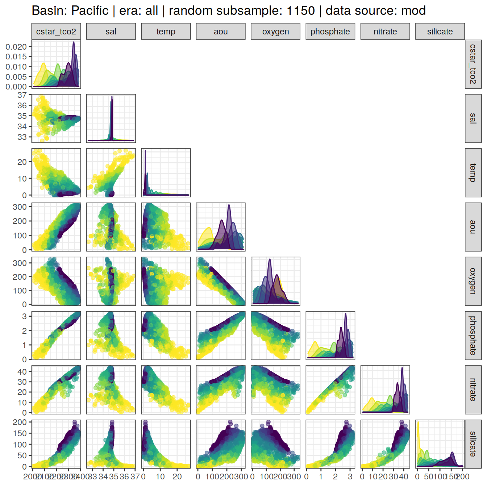

eMLR - assumption testing
Jens Daniel Müller
19 August, 2021
Last updated: 2021-08-19
Checks: 7 0
Knit directory: emlr_obs_v_XXX/
This reproducible R Markdown analysis was created with workflowr (version 1.6.2). The Checks tab describes the reproducibility checks that were applied when the results were created. The Past versions tab lists the development history.
Great! Since the R Markdown file has been committed to the Git repository, you know the exact version of the code that produced these results.
Great job! The global environment was empty. Objects defined in the global environment can affect the analysis in your R Markdown file in unknown ways. For reproduciblity it’s best to always run the code in an empty environment.
The command set.seed(20200707) was run prior to running the code in the R Markdown file. Setting a seed ensures that any results that rely on randomness, e.g. subsampling or permutations, are reproducible.
Great job! Recording the operating system, R version, and package versions is critical for reproducibility.
Nice! There were no cached chunks for this analysis, so you can be confident that you successfully produced the results during this run.
Great job! Using relative paths to the files within your workflowr project makes it easier to run your code on other machines.
Great! You are using Git for version control. Tracking code development and connecting the code version to the results is critical for reproducibility.
The results in this page were generated with repository version 4d618d3. See the Past versions tab to see a history of the changes made to the R Markdown and HTML files.
Note that you need to be careful to ensure that all relevant files for the analysis have been committed to Git prior to generating the results (you can use wflow_publish or wflow_git_commit). workflowr only checks the R Markdown file, but you know if there are other scripts or data files that it depends on. Below is the status of the Git repository when the results were generated:
Ignored files:
Ignored: .Rhistory
Ignored: .Rproj.user/
Unstaged changes:
Modified: code/Workflowr_project_managment.R
Modified: data/auxillary/params_local.rds
Note that any generated files, e.g. HTML, png, CSS, etc., are not included in this status report because it is ok for generated content to have uncommitted changes.
These are the previous versions of the repository in which changes were made to the R Markdown (analysis/eMLR_assumption_testing.Rmd) and HTML (docs/eMLR_assumption_testing.html) files. If you’ve configured a remote Git repository (see ?wflow_git_remote), click on the hyperlinks in the table below to view the files as they were in that past version.
| File | Version | Author | Date | Message |
|---|---|---|---|---|
| html | a03f2f0 | jens-daniel-mueller | 2021-08-18 | Build site. |
| html | 9335b31 | jens-daniel-mueller | 2021-08-10 | Build site. |
| html | 9943b45 | jens-daniel-mueller | 2021-08-10 | Build site. |
| html | 0b00a2b | jens-daniel-mueller | 2021-08-09 | Build site. |
| html | 755c6b1 | jens-daniel-mueller | 2021-08-09 | Build site. |
| html | cd8e0d5 | jens-daniel-mueller | 2021-08-06 | Build site. |
| html | 15773a0 | jens-daniel-mueller | 2021-08-06 | included calculation of revelle factor |
| html | da61d1a | jens-daniel-mueller | 2021-08-06 | Build site. |
| html | 340d731 | jens-daniel-mueller | 2021-08-06 | Build site. |
| html | 71546e4 | jens-daniel-mueller | 2021-08-06 | test with stricter CANYON-B filtering |
| html | 29444a1 | jens-daniel-mueller | 2021-08-05 | Build site. |
| html | 42e80c0 | jens-daniel-mueller | 2021-08-04 | Build site. |
| html | 48f6eed | jens-daniel-mueller | 2021-08-04 | Build site. |
| html | 1c597ab | jens-daniel-mueller | 2021-08-04 | Build site. |
| html | 81a46a4 | jens-daniel-mueller | 2021-08-03 | Build site. |
| html | b88c61b | jens-daniel-mueller | 2021-08-03 | Build site. |
| html | 0f0d5e5 | jens-daniel-mueller | 2021-08-03 | Build site. |
| html | a53656d | jens-daniel-mueller | 2021-08-03 | Build site. |
| html | 88f7356 | jens-daniel-mueller | 2021-08-02 | Build site. |
| html | d759279 | jens-daniel-mueller | 2021-08-02 | Build site. |
| html | 127b801 | jens-daniel-mueller | 2021-07-24 | Build site. |
| html | 1f65ef1 | jens-daniel-mueller | 2021-07-23 | Build site. |
| html | 912d90e | jens-daniel-mueller | 2021-07-23 | Build site. |
| html | 2477316 | jens-daniel-mueller | 2021-07-23 | rebuild: surface dcant mapping seperate |
| html | c9ccc00 | jens-daniel-mueller | 2021-07-22 | Build site. |
| html | 426b2df | jens-daniel-mueller | 2021-07-21 | Build site. |
| html | 971ce87 | jens-daniel-mueller | 2021-07-13 | Build site. |
| html | c18a8b1 | jens-daniel-mueller | 2021-07-09 | Build site. |
| Rmd | 795a3b0 | jens-daniel-mueller | 2021-07-09 | complete revision |
| html | 910d64a | jens-daniel-mueller | 2021-07-02 | Build site. |
| html | 1cbf907 | jens-daniel-mueller | 2021-07-02 | Build site. |
| html | 955f5dc | jens-daniel-mueller | 2021-06-29 | Build site. |
| html | 9480f94 | jens-daniel-mueller | 2021-06-29 | Build site. |
| html | d054c39 | jens-daniel-mueller | 2021-06-24 | Build site. |
| html | 4fcd066 | jens-daniel-mueller | 2021-06-24 | Build site. |
| html | 3b6387f | jens-daniel-mueller | 2021-06-18 | Build site. |
| html | 3052a6c | jens-daniel-mueller | 2021-06-15 | Build site. |
| html | 3cb64bd | jens-daniel-mueller | 2021-06-15 | Build site. |
| html | c6b3da6 | jens-daniel-mueller | 2021-06-14 | Build site. |
| html | 48c73fc | jens-daniel-mueller | 2021-06-14 | Build site. |
| html | 439ee80 | jens-daniel-mueller | 2021-06-11 | Build site. |
| html | 33ffcab | jens-daniel-mueller | 2021-06-10 | Build site. |
| html | 7e1f407 | jens-daniel-mueller | 2021-06-10 | Build site. |
| html | 2cbe18c | jens-daniel-mueller | 2021-06-10 | added zonal mean section control plots |
| html | 69c79d0 | jens-daniel-mueller | 2021-06-08 | Build site. |
| html | 1772903 | jens-daniel-mueller | 2021-06-07 | Build site. |
| html | 594ed9a | jens-daniel-mueller | 2021-06-04 | Build site. |
| html | db7df0e | jens-daniel-mueller | 2021-06-04 | rebuild without overlapping eras |
| html | 2edc791 | jens-daniel-mueller | 2021-06-04 | Build site. |
| html | 207339d | jens-daniel-mueller | 2021-06-03 | Build site. |
| html | 315710b | jens-daniel-mueller | 2021-06-03 | include anomalous changes |
| html | be90356 | jens-daniel-mueller | 2021-06-02 | Build site. |
| html | d37a85d | jens-daniel-mueller | 2021-05-31 | Build site. |
| html | 4b7a5ee | jens-daniel-mueller | 2021-05-28 | Build site. |
| html | 12b455a | jens-daniel-mueller | 2021-05-27 | Build site. |
| Rmd | ee13efb | jens-daniel-mueller | 2021-05-27 | optional source of local params fully implemented |
| html | 8c736a6 | jens-daniel-mueller | 2021-05-27 | Build site. |
| Rmd | dc8e4e1 | jens-daniel-mueller | 2021-05-27 | optional source of local params implemented |
| html | 25bd183 | jens-daniel-mueller | 2021-05-26 | Build site. |
| html | b79cb2d | jens-daniel-mueller | 2021-05-20 | Build site. |
| html | 62bd574 | jens-daniel-mueller | 2021-05-20 | Build site. |
| html | 7c56c39 | jens-daniel-mueller | 2021-05-19 | Build site. |
| html | 0de759e | jens-daniel-mueller | 2021-05-13 | Build site. |
| html | 52e7583 | jens-daniel-mueller | 2021-05-12 | Build site. |
| html | 969e631 | jens-daniel-mueller | 2021-05-12 | Build site. |
| html | d2a83bc | jens-daniel-mueller | 2021-04-16 | Build site. |
| html | c0a47df | jens-daniel-mueller | 2021-04-16 | Build site. |
| html | 50290e8 | jens-daniel-mueller | 2021-04-16 | overlapping eras |
| html | a00ec94 | jens-daniel-mueller | 2021-04-16 | Build site. |
| html | b6fe355 | jens-daniel-mueller | 2021-04-16 | Build site. |
| html | 81b7c6d | jens-daniel-mueller | 2021-04-16 | Build site. |
| html | ddec5b7 | jens-daniel-mueller | 2021-04-15 | Build site. |
| html | 29edae5 | jens-daniel-mueller | 2021-04-14 | Build site. |
| html | 099d566 | jens-daniel-mueller | 2021-04-14 | Build site. |
| html | bb44686 | jens-daniel-mueller | 2021-04-14 | Build site. |
| html | bf40480 | jens-daniel-mueller | 2021-04-13 | Build site. |
| html | 9f31fe3 | jens-daniel-mueller | 2021-04-13 | Build site. |
| Rmd | 80e1ee3 | jens-daniel-mueller | 2021-04-13 | rerun post-2000 with model data |
| html | c98be84 | jens-daniel-mueller | 2021-04-13 | Build site. |
| html | ea17c90 | jens-daniel-mueller | 2021-04-09 | Build site. |
| Rmd | 4d61e3d | jens-daniel-mueller | 2021-04-09 | included model data |
| html | 338dd3c | jens-daniel-mueller | 2021-04-09 | Build site. |
| html | a79ca2c | jens-daniel-mueller | 2021-04-09 | included model data |
| html | 7831fd3 | jens-daniel-mueller | 2021-04-09 | Build site. |
| html | 20b26d4 | jens-daniel-mueller | 2021-04-08 | Build site. |
| html | c0895f8 | jens-daniel-mueller | 2021-04-07 | Build site. |
| html | 156d5b7 | jens-daniel-mueller | 2021-04-07 | Build site. |
| html | eb827c9 | jens-daniel-mueller | 2021-04-07 | Build site. |
| Rmd | 49be8ed | jens-daniel-mueller | 2021-03-26 | included model data |
| html | ab5c8cf | jens-daniel-mueller | 2021-03-24 | Build site. |
| Rmd | da3c481 | jens-daniel-mueller | 2021-03-24 | included model data |
| html | 19faa17 | jens-daniel-mueller | 2021-03-24 | Build site. |
| Rmd | ae3b4d7 | jens-daniel-mueller | 2021-03-24 | included model data |
| html | 03b6009 | jens-daniel-mueller | 2021-03-23 | removed before copying template |
| html | 98d4a6d | jens-daniel-mueller | 2021-03-23 | Build site. |
| html | f155edd | jens-daniel-mueller | 2021-03-23 | Build site. |
| html | 380d215 | jens-daniel-mueller | 2021-03-21 | Build site. |
| html | 33b385b | jens-daniel-mueller | 2021-03-20 | Build site. |
| html | 330dcd0 | jens-daniel-mueller | 2021-03-20 | Build site. |
| html | 83a13de | jens-daniel-mueller | 2021-03-20 | Build site. |
| html | cf98c6d | jens-daniel-mueller | 2021-03-16 | Build site. |
| html | a1d52ff | jens-daniel-mueller | 2021-03-15 | Build site. |
| html | 0bade3b | jens-daniel-mueller | 2021-03-15 | Build site. |
| html | 27c1f4b | jens-daniel-mueller | 2021-03-14 | Build site. |
| html | af75ebf | jens-daniel-mueller | 2021-03-14 | Build site. |
| html | 5017709 | jens-daniel-mueller | 2021-03-11 | Build site. |
| html | 585b07f | jens-daniel-mueller | 2021-03-11 | Build site. |
| html | 6482ed7 | jens-daniel-mueller | 2021-03-11 | Build site. |
| html | 85a5ed2 | jens-daniel-mueller | 2021-03-10 | Build site. |
| html | 00688a1 | jens-daniel-mueller | 2021-03-05 | Build site. |
| html | 6c0bec6 | jens-daniel-mueller | 2021-03-05 | Build site. |
| html | 3c2ec33 | jens-daniel-mueller | 2021-03-05 | Build site. |
| html | af70b94 | jens-daniel-mueller | 2021-03-04 | Build site. |
| html | 86406d5 | jens-daniel-mueller | 2021-02-24 | Build site. |
| html | 3d3b4cc | jens-daniel-mueller | 2021-02-23 | Build site. |
| html | 7b672f7 | jens-daniel-mueller | 2021-01-11 | Build site. |
| html | 33ba23c | jens-daniel-mueller | 2021-01-07 | Build site. |
| html | 318609d | jens-daniel-mueller | 2020-12-23 | adapted more variable predictor selection |
| html | 9d0b2d0 | jens-daniel-mueller | 2020-12-23 | Build site. |
| html | 0aa2b50 | jens-daniel-mueller | 2020-12-23 | remove html before duplication |
| html | 39113c3 | jens-daniel-mueller | 2020-12-23 | Build site. |
| html | 2886da0 | jens-daniel-mueller | 2020-12-19 | Build site. |
| html | 02f0ee9 | jens-daniel-mueller | 2020-12-18 | cleaned up for copying template |
| html | 965dba3 | jens-daniel-mueller | 2020-12-18 | Build site. |
| html | 5d452fe | jens-daniel-mueller | 2020-12-18 | Build site. |
| Rmd | ca65bf5 | jens-daniel-mueller | 2020-12-18 | rebuild after final cleaning |
| html | 7bcb4eb | jens-daniel-mueller | 2020-12-18 | Build site. |
| html | d397028 | jens-daniel-mueller | 2020-12-18 | Build site. |
| html | 7131186 | jens-daniel-mueller | 2020-12-17 | Build site. |
| html | 22b07fb | jens-daniel-mueller | 2020-12-17 | Build site. |
| html | f3a708f | jens-daniel-mueller | 2020-12-17 | Build site. |
| html | e4ca289 | jens-daniel-mueller | 2020-12-16 | Build site. |
| html | 158fe26 | jens-daniel-mueller | 2020-12-15 | Build site. |
| html | 7a9a4cb | jens-daniel-mueller | 2020-12-15 | Build site. |
| html | 61b263c | jens-daniel-mueller | 2020-12-15 | Build site. |
| html | 4d612dd | jens-daniel-mueller | 2020-12-15 | Build site. |
| Rmd | e7e5ff1 | jens-daniel-mueller | 2020-12-15 | rebuild with eMLR target variable selection |
| html | 953caf3 | jens-daniel-mueller | 2020-12-15 | Build site. |
| html | 42daf5c | jens-daniel-mueller | 2020-12-14 | Build site. |
| Rmd | 923aa7f | jens-daniel-mueller | 2020-12-14 | rebuild with new path and auto folder creation |
| html | 984697e | jens-daniel-mueller | 2020-12-12 | Build site. |
| html | 3ebff89 | jens-daniel-mueller | 2020-12-12 | Build site. |
| html | 5d96d3c | jens-daniel-mueller | 2020-12-11 | Build site. |
| Rmd | 3d33a37 | jens-daniel-mueller | 2020-12-11 | selectable basinmask, try 5 |
| html | b01a367 | jens-daniel-mueller | 2020-12-09 | Build site. |
| html | 24a632f | jens-daniel-mueller | 2020-12-07 | Build site. |
| html | 92dca91 | jens-daniel-mueller | 2020-12-07 | Build site. |
| html | 6a8004b | jens-daniel-mueller | 2020-12-07 | Build site. |
| html | 70bf1a5 | jens-daniel-mueller | 2020-12-07 | Build site. |
| html | 7555355 | jens-daniel-mueller | 2020-12-07 | Build site. |
| html | 143d6fa | jens-daniel-mueller | 2020-12-07 | Build site. |
| Rmd | 33b1973 | jens-daniel-mueller | 2020-12-07 | run with WOCE flag 2 only |
| html | abc6818 | jens-daniel-mueller | 2020-12-03 | Build site. |
| Rmd | 992ba15 | jens-daniel-mueller | 2020-12-03 | rebuild with variable inventory depth |
| html | c8c2e7b | jens-daniel-mueller | 2020-12-03 | Build site. |
| Rmd | 83203db | jens-daniel-mueller | 2020-12-03 | calculate cant with variable inventory depth |
| html | 090e4d5 | jens-daniel-mueller | 2020-12-02 | Build site. |
| html | 7c25f7a | jens-daniel-mueller | 2020-12-02 | Build site. |
| html | ec8dc38 | jens-daniel-mueller | 2020-12-02 | Build site. |
| html | c987de1 | jens-daniel-mueller | 2020-12-02 | Build site. |
| html | f8358f8 | jens-daniel-mueller | 2020-12-02 | Build site. |
| html | b03ddb8 | jens-daniel-mueller | 2020-12-02 | Build site. |
| Rmd | 9183e8f | jens-daniel-mueller | 2020-12-02 | revised assignment of era to eras |
| html | 22d0127 | jens-daniel-mueller | 2020-12-01 | Build site. |
| html | 0ff728b | jens-daniel-mueller | 2020-12-01 | Build site. |
| html | 91435ae | jens-daniel-mueller | 2020-12-01 | Build site. |
| Rmd | 17d09be | jens-daniel-mueller | 2020-12-01 | auto eras naming |
| html | cf19652 | jens-daniel-mueller | 2020-11-30 | Build site. |
| Rmd | 2842970 | jens-daniel-mueller | 2020-11-30 | cleaned for eMLR part only |
| html | 196be51 | jens-daniel-mueller | 2020-11-30 | Build site. |
| Rmd | 7a4b015 | jens-daniel-mueller | 2020-11-30 | first rebuild on ETH server |
| Rmd | bc61ce3 | Jens Müller | 2020-11-30 | Initial commit |
| html | bc61ce3 | Jens Müller | 2020-11-30 | Initial commit |
1 Version ID
The results displayed on this site correspond to the Version_ID: v_XXX
2 Required data
Required are:
- cleaned and prepared GLODAPv2.2020 file
GLODAP <-
read_csv(paste(path_version_data,
"GLODAPv2.2020_MLR_fitting_ready.csv",
sep = ""))3 Predictor correlation
The correlation between:
- pairs of seven potential predictor variables and
- C* and seven potential predictor variables
were investigated based on:
- property-property plots and
- calculated correlation coeffcients.
3.1 Correlation plots
For an overview, a random subset of data from all eras was plotted separately for both basins, with color indicating neutral density slabs (high density = dark-purple color).
plot_fun <- function(df){
ggpairs(
data = df,
columns = c(params_local$MLR_target,
params_local$MLR_predictors),
upper = "blank",
ggplot2::aes(col = gamma_slab, fill = gamma_slab, alpha = 0.01)
) +
scale_fill_viridis_d(direction = -1) +
scale_color_viridis_d(direction = -1) +
labs(title = paste(
"Basin:",
unique(df$basin),
"| era: all | random subsample:",
nrow(df),
"| data source:",
unique(df$data_source)
))
}
GLODAP %>%
slice_sample(n = 5e3) %>%
group_split(basin, data_source) %>%
# head(1) %>%
map(plot_fun)[[1]]
| Version | Author | Date |
|---|---|---|
| a03f2f0 | jens-daniel-mueller | 2021-08-18 |
| 9335b31 | jens-daniel-mueller | 2021-08-10 |
| 9943b45 | jens-daniel-mueller | 2021-08-10 |
| 0b00a2b | jens-daniel-mueller | 2021-08-09 |
| 755c6b1 | jens-daniel-mueller | 2021-08-09 |
| cd8e0d5 | jens-daniel-mueller | 2021-08-06 |
| 15773a0 | jens-daniel-mueller | 2021-08-06 |
| da61d1a | jens-daniel-mueller | 2021-08-06 |
| 340d731 | jens-daniel-mueller | 2021-08-06 |
| 71546e4 | jens-daniel-mueller | 2021-08-06 |
| 29444a1 | jens-daniel-mueller | 2021-08-05 |
| 42e80c0 | jens-daniel-mueller | 2021-08-04 |
| 48f6eed | jens-daniel-mueller | 2021-08-04 |
| 81a46a4 | jens-daniel-mueller | 2021-08-03 |
| b88c61b | jens-daniel-mueller | 2021-08-03 |
| a53656d | jens-daniel-mueller | 2021-08-03 |
| 88f7356 | jens-daniel-mueller | 2021-08-02 |
| d759279 | jens-daniel-mueller | 2021-08-02 |
| 127b801 | jens-daniel-mueller | 2021-07-24 |
| 912d90e | jens-daniel-mueller | 2021-07-23 |
| 2477316 | jens-daniel-mueller | 2021-07-23 |
| c9ccc00 | jens-daniel-mueller | 2021-07-22 |
| c18a8b1 | jens-daniel-mueller | 2021-07-09 |
| 910d64a | jens-daniel-mueller | 2021-07-02 |
| 1cbf907 | jens-daniel-mueller | 2021-07-02 |
| 955f5dc | jens-daniel-mueller | 2021-06-29 |
| 9480f94 | jens-daniel-mueller | 2021-06-29 |
| d054c39 | jens-daniel-mueller | 2021-06-24 |
| 4fcd066 | jens-daniel-mueller | 2021-06-24 |
| 3b6387f | jens-daniel-mueller | 2021-06-18 |
| c6b3da6 | jens-daniel-mueller | 2021-06-14 |
| 439ee80 | jens-daniel-mueller | 2021-06-11 |
| 33ffcab | jens-daniel-mueller | 2021-06-10 |
| 7e1f407 | jens-daniel-mueller | 2021-06-10 |
| 2cbe18c | jens-daniel-mueller | 2021-06-10 |
| 69c79d0 | jens-daniel-mueller | 2021-06-08 |
| 1772903 | jens-daniel-mueller | 2021-06-07 |
| 594ed9a | jens-daniel-mueller | 2021-06-04 |
| db7df0e | jens-daniel-mueller | 2021-06-04 |
| 2edc791 | jens-daniel-mueller | 2021-06-04 |
| 207339d | jens-daniel-mueller | 2021-06-03 |
| 315710b | jens-daniel-mueller | 2021-06-03 |
| be90356 | jens-daniel-mueller | 2021-06-02 |
| d37a85d | jens-daniel-mueller | 2021-05-31 |
| 4b7a5ee | jens-daniel-mueller | 2021-05-28 |
| 25bd183 | jens-daniel-mueller | 2021-05-26 |
| 62bd574 | jens-daniel-mueller | 2021-05-20 |
| 7c56c39 | jens-daniel-mueller | 2021-05-19 |
| 52e7583 | jens-daniel-mueller | 2021-05-12 |
| 969e631 | jens-daniel-mueller | 2021-05-12 |
| d2a83bc | jens-daniel-mueller | 2021-04-16 |
| c0a47df | jens-daniel-mueller | 2021-04-16 |
| 50290e8 | jens-daniel-mueller | 2021-04-16 |
| a00ec94 | jens-daniel-mueller | 2021-04-16 |
| b6fe355 | jens-daniel-mueller | 2021-04-16 |
| 81b7c6d | jens-daniel-mueller | 2021-04-16 |
| ddec5b7 | jens-daniel-mueller | 2021-04-15 |
| 29edae5 | jens-daniel-mueller | 2021-04-14 |
| 9f31fe3 | jens-daniel-mueller | 2021-04-13 |
| ea17c90 | jens-daniel-mueller | 2021-04-09 |
| 338dd3c | jens-daniel-mueller | 2021-04-09 |
| a79ca2c | jens-daniel-mueller | 2021-04-09 |
| eb827c9 | jens-daniel-mueller | 2021-04-07 |
| ab5c8cf | jens-daniel-mueller | 2021-03-24 |
| 03b6009 | jens-daniel-mueller | 2021-03-23 |
| 98d4a6d | jens-daniel-mueller | 2021-03-23 |
| 83a13de | jens-daniel-mueller | 2021-03-20 |
| cf98c6d | jens-daniel-mueller | 2021-03-16 |
| a1d52ff | jens-daniel-mueller | 2021-03-15 |
| 0bade3b | jens-daniel-mueller | 2021-03-15 |
| 27c1f4b | jens-daniel-mueller | 2021-03-14 |
| af75ebf | jens-daniel-mueller | 2021-03-14 |
| 5017709 | jens-daniel-mueller | 2021-03-11 |
| 585b07f | jens-daniel-mueller | 2021-03-11 |
| 85a5ed2 | jens-daniel-mueller | 2021-03-10 |
| 6c0bec6 | jens-daniel-mueller | 2021-03-05 |
| af70b94 | jens-daniel-mueller | 2021-03-04 |
| 7b672f7 | jens-daniel-mueller | 2021-01-11 |
| 33ba23c | jens-daniel-mueller | 2021-01-07 |
| 318609d | jens-daniel-mueller | 2020-12-23 |
| 9d0b2d0 | jens-daniel-mueller | 2020-12-23 |
| 0aa2b50 | jens-daniel-mueller | 2020-12-23 |
| 2886da0 | jens-daniel-mueller | 2020-12-19 |
| 02f0ee9 | jens-daniel-mueller | 2020-12-18 |
| 7bcb4eb | jens-daniel-mueller | 2020-12-18 |
| 158fe26 | jens-daniel-mueller | 2020-12-15 |
| 7a9a4cb | jens-daniel-mueller | 2020-12-15 |
| 61b263c | jens-daniel-mueller | 2020-12-15 |
| 4d612dd | jens-daniel-mueller | 2020-12-15 |
| 984697e | jens-daniel-mueller | 2020-12-12 |
| 3ebff89 | jens-daniel-mueller | 2020-12-12 |
| 5d96d3c | jens-daniel-mueller | 2020-12-11 |
[[2]]
| Version | Author | Date |
|---|---|---|
| a03f2f0 | jens-daniel-mueller | 2021-08-18 |
| 9335b31 | jens-daniel-mueller | 2021-08-10 |
| 9943b45 | jens-daniel-mueller | 2021-08-10 |
| 0b00a2b | jens-daniel-mueller | 2021-08-09 |
| 755c6b1 | jens-daniel-mueller | 2021-08-09 |
| cd8e0d5 | jens-daniel-mueller | 2021-08-06 |
| 15773a0 | jens-daniel-mueller | 2021-08-06 |
| da61d1a | jens-daniel-mueller | 2021-08-06 |
| 340d731 | jens-daniel-mueller | 2021-08-06 |
| 71546e4 | jens-daniel-mueller | 2021-08-06 |
| 29444a1 | jens-daniel-mueller | 2021-08-05 |
| 42e80c0 | jens-daniel-mueller | 2021-08-04 |
| 48f6eed | jens-daniel-mueller | 2021-08-04 |
| 81a46a4 | jens-daniel-mueller | 2021-08-03 |
| b88c61b | jens-daniel-mueller | 2021-08-03 |
| a53656d | jens-daniel-mueller | 2021-08-03 |
| 88f7356 | jens-daniel-mueller | 2021-08-02 |
| d759279 | jens-daniel-mueller | 2021-08-02 |
| 127b801 | jens-daniel-mueller | 2021-07-24 |
| 912d90e | jens-daniel-mueller | 2021-07-23 |
| 2477316 | jens-daniel-mueller | 2021-07-23 |
| c9ccc00 | jens-daniel-mueller | 2021-07-22 |
| c18a8b1 | jens-daniel-mueller | 2021-07-09 |
| 910d64a | jens-daniel-mueller | 2021-07-02 |
| 1cbf907 | jens-daniel-mueller | 2021-07-02 |
| 955f5dc | jens-daniel-mueller | 2021-06-29 |
| 9480f94 | jens-daniel-mueller | 2021-06-29 |
| d054c39 | jens-daniel-mueller | 2021-06-24 |
| 4fcd066 | jens-daniel-mueller | 2021-06-24 |
| 3b6387f | jens-daniel-mueller | 2021-06-18 |
| c6b3da6 | jens-daniel-mueller | 2021-06-14 |
| 439ee80 | jens-daniel-mueller | 2021-06-11 |
| 33ffcab | jens-daniel-mueller | 2021-06-10 |
| 7e1f407 | jens-daniel-mueller | 2021-06-10 |
| 2cbe18c | jens-daniel-mueller | 2021-06-10 |
| 69c79d0 | jens-daniel-mueller | 2021-06-08 |
| 1772903 | jens-daniel-mueller | 2021-06-07 |
| 594ed9a | jens-daniel-mueller | 2021-06-04 |
| db7df0e | jens-daniel-mueller | 2021-06-04 |
| 2edc791 | jens-daniel-mueller | 2021-06-04 |
| 207339d | jens-daniel-mueller | 2021-06-03 |
| 315710b | jens-daniel-mueller | 2021-06-03 |
| d37a85d | jens-daniel-mueller | 2021-05-31 |
| 4b7a5ee | jens-daniel-mueller | 2021-05-28 |
| 25bd183 | jens-daniel-mueller | 2021-05-26 |
| 62bd574 | jens-daniel-mueller | 2021-05-20 |
| 7c56c39 | jens-daniel-mueller | 2021-05-19 |
| 52e7583 | jens-daniel-mueller | 2021-05-12 |
| 969e631 | jens-daniel-mueller | 2021-05-12 |
| d2a83bc | jens-daniel-mueller | 2021-04-16 |
| c0a47df | jens-daniel-mueller | 2021-04-16 |
| 50290e8 | jens-daniel-mueller | 2021-04-16 |
| a00ec94 | jens-daniel-mueller | 2021-04-16 |
| b6fe355 | jens-daniel-mueller | 2021-04-16 |
| 81b7c6d | jens-daniel-mueller | 2021-04-16 |
| ddec5b7 | jens-daniel-mueller | 2021-04-15 |
| 29edae5 | jens-daniel-mueller | 2021-04-14 |
| 9f31fe3 | jens-daniel-mueller | 2021-04-13 |
| ea17c90 | jens-daniel-mueller | 2021-04-09 |
| 338dd3c | jens-daniel-mueller | 2021-04-09 |
| a79ca2c | jens-daniel-mueller | 2021-04-09 |
| eb827c9 | jens-daniel-mueller | 2021-04-07 |
| ab5c8cf | jens-daniel-mueller | 2021-03-24 |
| 03b6009 | jens-daniel-mueller | 2021-03-23 |
| 98d4a6d | jens-daniel-mueller | 2021-03-23 |
| 83a13de | jens-daniel-mueller | 2021-03-20 |
| cf98c6d | jens-daniel-mueller | 2021-03-16 |
| a1d52ff | jens-daniel-mueller | 2021-03-15 |
| 0bade3b | jens-daniel-mueller | 2021-03-15 |
| 27c1f4b | jens-daniel-mueller | 2021-03-14 |
| af75ebf | jens-daniel-mueller | 2021-03-14 |
| 5017709 | jens-daniel-mueller | 2021-03-11 |
| 585b07f | jens-daniel-mueller | 2021-03-11 |
| 85a5ed2 | jens-daniel-mueller | 2021-03-10 |
| 6c0bec6 | jens-daniel-mueller | 2021-03-05 |
| af70b94 | jens-daniel-mueller | 2021-03-04 |
| 7b672f7 | jens-daniel-mueller | 2021-01-11 |
| 33ba23c | jens-daniel-mueller | 2021-01-07 |
| 318609d | jens-daniel-mueller | 2020-12-23 |
| 9d0b2d0 | jens-daniel-mueller | 2020-12-23 |
| 0aa2b50 | jens-daniel-mueller | 2020-12-23 |
| 2886da0 | jens-daniel-mueller | 2020-12-19 |
| 02f0ee9 | jens-daniel-mueller | 2020-12-18 |
| 7bcb4eb | jens-daniel-mueller | 2020-12-18 |
| 158fe26 | jens-daniel-mueller | 2020-12-15 |
| 7a9a4cb | jens-daniel-mueller | 2020-12-15 |
| 61b263c | jens-daniel-mueller | 2020-12-15 |
| 4d612dd | jens-daniel-mueller | 2020-12-15 |
| 984697e | jens-daniel-mueller | 2020-12-12 |
| 3ebff89 | jens-daniel-mueller | 2020-12-12 |
| 5d96d3c | jens-daniel-mueller | 2020-12-11 |
[[3]]
| Version | Author | Date |
|---|---|---|
| a03f2f0 | jens-daniel-mueller | 2021-08-18 |
| 9335b31 | jens-daniel-mueller | 2021-08-10 |
| 9943b45 | jens-daniel-mueller | 2021-08-10 |
| da61d1a | jens-daniel-mueller | 2021-08-06 |
| 340d731 | jens-daniel-mueller | 2021-08-06 |
| 71546e4 | jens-daniel-mueller | 2021-08-06 |
| 29444a1 | jens-daniel-mueller | 2021-08-05 |
| 42e80c0 | jens-daniel-mueller | 2021-08-04 |
| 48f6eed | jens-daniel-mueller | 2021-08-04 |
| 81a46a4 | jens-daniel-mueller | 2021-08-03 |
| b88c61b | jens-daniel-mueller | 2021-08-03 |
| a53656d | jens-daniel-mueller | 2021-08-03 |
| 88f7356 | jens-daniel-mueller | 2021-08-02 |
| d759279 | jens-daniel-mueller | 2021-08-02 |
| 127b801 | jens-daniel-mueller | 2021-07-24 |
| 912d90e | jens-daniel-mueller | 2021-07-23 |
| 2477316 | jens-daniel-mueller | 2021-07-23 |
| c9ccc00 | jens-daniel-mueller | 2021-07-22 |
| c18a8b1 | jens-daniel-mueller | 2021-07-09 |
| 910d64a | jens-daniel-mueller | 2021-07-02 |
| 1cbf907 | jens-daniel-mueller | 2021-07-02 |
| 955f5dc | jens-daniel-mueller | 2021-06-29 |
| 9480f94 | jens-daniel-mueller | 2021-06-29 |
| d054c39 | jens-daniel-mueller | 2021-06-24 |
| 4fcd066 | jens-daniel-mueller | 2021-06-24 |
| 3b6387f | jens-daniel-mueller | 2021-06-18 |
| c6b3da6 | jens-daniel-mueller | 2021-06-14 |
| 439ee80 | jens-daniel-mueller | 2021-06-11 |
| 33ffcab | jens-daniel-mueller | 2021-06-10 |
| 7e1f407 | jens-daniel-mueller | 2021-06-10 |
| 2cbe18c | jens-daniel-mueller | 2021-06-10 |
| 69c79d0 | jens-daniel-mueller | 2021-06-08 |
| 1772903 | jens-daniel-mueller | 2021-06-07 |
| 594ed9a | jens-daniel-mueller | 2021-06-04 |
| db7df0e | jens-daniel-mueller | 2021-06-04 |
| 2edc791 | jens-daniel-mueller | 2021-06-04 |
| 207339d | jens-daniel-mueller | 2021-06-03 |
| 315710b | jens-daniel-mueller | 2021-06-03 |
| be90356 | jens-daniel-mueller | 2021-06-02 |
| d37a85d | jens-daniel-mueller | 2021-05-31 |
| 4b7a5ee | jens-daniel-mueller | 2021-05-28 |
| 25bd183 | jens-daniel-mueller | 2021-05-26 |
| 62bd574 | jens-daniel-mueller | 2021-05-20 |
| 7c56c39 | jens-daniel-mueller | 2021-05-19 |
| 52e7583 | jens-daniel-mueller | 2021-05-12 |
| 969e631 | jens-daniel-mueller | 2021-05-12 |
| d2a83bc | jens-daniel-mueller | 2021-04-16 |
| c0a47df | jens-daniel-mueller | 2021-04-16 |
| 50290e8 | jens-daniel-mueller | 2021-04-16 |
| a00ec94 | jens-daniel-mueller | 2021-04-16 |
| b6fe355 | jens-daniel-mueller | 2021-04-16 |
| 81b7c6d | jens-daniel-mueller | 2021-04-16 |
| ddec5b7 | jens-daniel-mueller | 2021-04-15 |
| 29edae5 | jens-daniel-mueller | 2021-04-14 |
| 099d566 | jens-daniel-mueller | 2021-04-14 |
| bb44686 | jens-daniel-mueller | 2021-04-14 |
| bf40480 | jens-daniel-mueller | 2021-04-13 |
| 9f31fe3 | jens-daniel-mueller | 2021-04-13 |
| ea17c90 | jens-daniel-mueller | 2021-04-09 |
| 338dd3c | jens-daniel-mueller | 2021-04-09 |
| a79ca2c | jens-daniel-mueller | 2021-04-09 |
| eb827c9 | jens-daniel-mueller | 2021-04-07 |
| ab5c8cf | jens-daniel-mueller | 2021-03-24 |
| 0aa2b50 | jens-daniel-mueller | 2020-12-23 |
| 2886da0 | jens-daniel-mueller | 2020-12-19 |
| 02f0ee9 | jens-daniel-mueller | 2020-12-18 |
| 7bcb4eb | jens-daniel-mueller | 2020-12-18 |
| 158fe26 | jens-daniel-mueller | 2020-12-15 |
| 7a9a4cb | jens-daniel-mueller | 2020-12-15 |
| 61b263c | jens-daniel-mueller | 2020-12-15 |
| 4d612dd | jens-daniel-mueller | 2020-12-15 |
| 984697e | jens-daniel-mueller | 2020-12-12 |
| 3ebff89 | jens-daniel-mueller | 2020-12-12 |
| 5d96d3c | jens-daniel-mueller | 2020-12-11 |
[[4]]
| Version | Author | Date |
|---|---|---|
| a03f2f0 | jens-daniel-mueller | 2021-08-18 |
| 9335b31 | jens-daniel-mueller | 2021-08-10 |
| 9943b45 | jens-daniel-mueller | 2021-08-10 |
| da61d1a | jens-daniel-mueller | 2021-08-06 |
| 340d731 | jens-daniel-mueller | 2021-08-06 |
| 71546e4 | jens-daniel-mueller | 2021-08-06 |
| 29444a1 | jens-daniel-mueller | 2021-08-05 |
| 42e80c0 | jens-daniel-mueller | 2021-08-04 |
| 48f6eed | jens-daniel-mueller | 2021-08-04 |
| 81a46a4 | jens-daniel-mueller | 2021-08-03 |
| b88c61b | jens-daniel-mueller | 2021-08-03 |
| a53656d | jens-daniel-mueller | 2021-08-03 |
| 88f7356 | jens-daniel-mueller | 2021-08-02 |
| d759279 | jens-daniel-mueller | 2021-08-02 |
| 127b801 | jens-daniel-mueller | 2021-07-24 |
| 912d90e | jens-daniel-mueller | 2021-07-23 |
| 2477316 | jens-daniel-mueller | 2021-07-23 |
| c9ccc00 | jens-daniel-mueller | 2021-07-22 |
| c18a8b1 | jens-daniel-mueller | 2021-07-09 |
| 910d64a | jens-daniel-mueller | 2021-07-02 |
| 1cbf907 | jens-daniel-mueller | 2021-07-02 |
| 955f5dc | jens-daniel-mueller | 2021-06-29 |
| 9480f94 | jens-daniel-mueller | 2021-06-29 |
| d054c39 | jens-daniel-mueller | 2021-06-24 |
| 4fcd066 | jens-daniel-mueller | 2021-06-24 |
| 3b6387f | jens-daniel-mueller | 2021-06-18 |
| c6b3da6 | jens-daniel-mueller | 2021-06-14 |
| 439ee80 | jens-daniel-mueller | 2021-06-11 |
| 33ffcab | jens-daniel-mueller | 2021-06-10 |
| 7e1f407 | jens-daniel-mueller | 2021-06-10 |
| 2cbe18c | jens-daniel-mueller | 2021-06-10 |
| 69c79d0 | jens-daniel-mueller | 2021-06-08 |
| 1772903 | jens-daniel-mueller | 2021-06-07 |
| 594ed9a | jens-daniel-mueller | 2021-06-04 |
| db7df0e | jens-daniel-mueller | 2021-06-04 |
| 2edc791 | jens-daniel-mueller | 2021-06-04 |
| 207339d | jens-daniel-mueller | 2021-06-03 |
| 315710b | jens-daniel-mueller | 2021-06-03 |
| d37a85d | jens-daniel-mueller | 2021-05-31 |
| 4b7a5ee | jens-daniel-mueller | 2021-05-28 |
| 25bd183 | jens-daniel-mueller | 2021-05-26 |
| 62bd574 | jens-daniel-mueller | 2021-05-20 |
| 7c56c39 | jens-daniel-mueller | 2021-05-19 |
| 52e7583 | jens-daniel-mueller | 2021-05-12 |
| 969e631 | jens-daniel-mueller | 2021-05-12 |
| d2a83bc | jens-daniel-mueller | 2021-04-16 |
| c0a47df | jens-daniel-mueller | 2021-04-16 |
| 50290e8 | jens-daniel-mueller | 2021-04-16 |
| a00ec94 | jens-daniel-mueller | 2021-04-16 |
| b6fe355 | jens-daniel-mueller | 2021-04-16 |
| 81b7c6d | jens-daniel-mueller | 2021-04-16 |
| ddec5b7 | jens-daniel-mueller | 2021-04-15 |
| 29edae5 | jens-daniel-mueller | 2021-04-14 |
| 099d566 | jens-daniel-mueller | 2021-04-14 |
| bb44686 | jens-daniel-mueller | 2021-04-14 |
| bf40480 | jens-daniel-mueller | 2021-04-13 |
| 9f31fe3 | jens-daniel-mueller | 2021-04-13 |
| ea17c90 | jens-daniel-mueller | 2021-04-09 |
| 338dd3c | jens-daniel-mueller | 2021-04-09 |
| a79ca2c | jens-daniel-mueller | 2021-04-09 |
| eb827c9 | jens-daniel-mueller | 2021-04-07 |
| ab5c8cf | jens-daniel-mueller | 2021-03-24 |
| 984697e | jens-daniel-mueller | 2020-12-12 |
| 3ebff89 | jens-daniel-mueller | 2020-12-12 |
| 5d96d3c | jens-daniel-mueller | 2020-12-11 |
[[5]]
| Version | Author | Date |
|---|---|---|
| a03f2f0 | jens-daniel-mueller | 2021-08-18 |
| 9335b31 | jens-daniel-mueller | 2021-08-10 |
| 9943b45 | jens-daniel-mueller | 2021-08-10 |
| da61d1a | jens-daniel-mueller | 2021-08-06 |
| 340d731 | jens-daniel-mueller | 2021-08-06 |
| 71546e4 | jens-daniel-mueller | 2021-08-06 |
| 29444a1 | jens-daniel-mueller | 2021-08-05 |
| 42e80c0 | jens-daniel-mueller | 2021-08-04 |
| 48f6eed | jens-daniel-mueller | 2021-08-04 |
| 81a46a4 | jens-daniel-mueller | 2021-08-03 |
| b88c61b | jens-daniel-mueller | 2021-08-03 |
| a53656d | jens-daniel-mueller | 2021-08-03 |
| 88f7356 | jens-daniel-mueller | 2021-08-02 |
| 127b801 | jens-daniel-mueller | 2021-07-24 |
| 912d90e | jens-daniel-mueller | 2021-07-23 |
| 2477316 | jens-daniel-mueller | 2021-07-23 |
| c9ccc00 | jens-daniel-mueller | 2021-07-22 |
| c18a8b1 | jens-daniel-mueller | 2021-07-09 |
| 910d64a | jens-daniel-mueller | 2021-07-02 |
| 1cbf907 | jens-daniel-mueller | 2021-07-02 |
| 955f5dc | jens-daniel-mueller | 2021-06-29 |
| b6fe355 | jens-daniel-mueller | 2021-04-16 |
| 81b7c6d | jens-daniel-mueller | 2021-04-16 |
| 099d566 | jens-daniel-mueller | 2021-04-14 |
| bb44686 | jens-daniel-mueller | 2021-04-14 |
| 984697e | jens-daniel-mueller | 2020-12-12 |
| 3ebff89 | jens-daniel-mueller | 2020-12-12 |
| 5d96d3c | jens-daniel-mueller | 2020-12-11 |
[[6]]
| Version | Author | Date |
|---|---|---|
| a03f2f0 | jens-daniel-mueller | 2021-08-18 |
| 9335b31 | jens-daniel-mueller | 2021-08-10 |
| 9943b45 | jens-daniel-mueller | 2021-08-10 |
| da61d1a | jens-daniel-mueller | 2021-08-06 |
| 340d731 | jens-daniel-mueller | 2021-08-06 |
| 71546e4 | jens-daniel-mueller | 2021-08-06 |
| 29444a1 | jens-daniel-mueller | 2021-08-05 |
| 42e80c0 | jens-daniel-mueller | 2021-08-04 |
| 48f6eed | jens-daniel-mueller | 2021-08-04 |
| 81a46a4 | jens-daniel-mueller | 2021-08-03 |
| b88c61b | jens-daniel-mueller | 2021-08-03 |
| a53656d | jens-daniel-mueller | 2021-08-03 |
| 88f7356 | jens-daniel-mueller | 2021-08-02 |
| 127b801 | jens-daniel-mueller | 2021-07-24 |
| 912d90e | jens-daniel-mueller | 2021-07-23 |
| 2477316 | jens-daniel-mueller | 2021-07-23 |
| c9ccc00 | jens-daniel-mueller | 2021-07-22 |
| c18a8b1 | jens-daniel-mueller | 2021-07-09 |
| 910d64a | jens-daniel-mueller | 2021-07-02 |
| 1cbf907 | jens-daniel-mueller | 2021-07-02 |
| 955f5dc | jens-daniel-mueller | 2021-06-29 |
| b6fe355 | jens-daniel-mueller | 2021-04-16 |
| 81b7c6d | jens-daniel-mueller | 2021-04-16 |
| 099d566 | jens-daniel-mueller | 2021-04-14 |
| bb44686 | jens-daniel-mueller | 2021-04-14 |
GLODAP <- GLODAP %>%
filter(data_source == "obs") %>%
select(-data_source)Individual correlation plots for each basin, era and neutral density (gamma) slab are available at:
/nfs/kryo/work/jenmueller/emlr_cant/observations/v_XXX/figures/Observations_correlation/
if (params_local$plot_all_figures == "y") {
for (i_basin in unique(GLODAP$basin)) {
for (i_era in unique(GLODAP$era)) {
# i_basin <- unique(GLODAP$basin)[1]
# i_era <- unique(GLODAP$era)[1]
GLODAP_basin_era <- GLODAP %>%
filter(basin == i_basin,
era == i_era)
for (i_gamma_slab in unique(GLODAP_basin_era$gamma_slab)) {
# i_gamma_slab <- unique(GLODAP_basin_era$gamma_slab)[5]
GLODAP_highlight <- GLODAP_basin_era %>%
mutate(gamma_highlight = if_else(gamma_slab == i_gamma_slab,
"in", "out")) %>%
arrange(desc(gamma_highlight))
p <- GLODAP_highlight %>%
ggpairs(
columns = c(params_local$MLR_target,
params_local$MLR_predictors),
ggplot2::aes(
col = gamma_highlight,
fill = gamma_highlight,
alpha = 0.01
)
) +
scale_fill_manual(values = c("red", "grey")) +
scale_color_manual(values = c("red", "grey")) +
labs(
title = paste(
i_era,
"|",
i_basin,
"| Gamma slab",
i_gamma_slab,
"| # obs total",
nrow(GLODAP_basin_era),
"| # obs slab",
nrow(GLODAP_highlight %>%
filter(gamma_highlight == "in"))
)
)
png(
filename = paste(
path_version_figures,
"Observations_correlation/",
paste(
"Predictor_correlation",
i_era,
i_basin,
i_gamma_slab,
".png",
sep = "_"
),
sep = ""),
width = 12,
height = 12,
units = "in",
res = 300
)
print(p)
dev.off()
}
}
}
}3.2 Correlation assesment
3.2.1 Calculation of correlation coeffcients
Correlation coefficients were calculated individually within each slabs, era and basin.
for (i_basin in unique(GLODAP$basin)) {
for (i_era in unique(GLODAP$era)) {
# i_basin <- unique(GLODAP$basin)[1]
# i_era <- unique(GLODAP$era)[1]
GLODAP_basin_era <- GLODAP %>%
filter(basin == i_basin,
era == i_era) %>%
select(basin,
era,
gamma_slab,
params_local$MLR_target,
params_local$MLR_predictors)
for (i_gamma_slab in unique(GLODAP_basin_era$gamma_slab)) {
# i_gamma_slab <- unique(GLODAP_basin_era$gamma_slab)[5]
print(i_gamma_slab)
GLODAP_basin_era_slab <- GLODAP_basin_era %>%
filter(gamma_slab == i_gamma_slab)
# calculate correlation table
cor_target_predictor_temp <- GLODAP_basin_era_slab %>%
select(-c(basin, era, gamma_slab)) %>%
correlate() %>%
focus(params_local$MLR_target) %>%
mutate(basin = i_basin,
era = i_era,
gamma_slab = i_gamma_slab)
if (exists("cor_target_predictor")) {
cor_target_predictor <-
bind_rows(cor_target_predictor, cor_target_predictor_temp)
}
if (!exists("cor_target_predictor")) {
cor_target_predictor <- cor_target_predictor_temp
}
cor_predictors_temp <- GLODAP_basin_era_slab %>%
select(-c(basin, era, gamma_slab)) %>%
correlate() %>%
shave %>%
stretch() %>%
filter(!is.na(r),
x != params_local$MLR_target,
y != params_local$MLR_target) %>%
mutate(pair = paste(x, y, sep = " + ")) %>%
select(-c(x, y)) %>%
mutate(basin = i_basin,
era = i_era,
gamma_slab = i_gamma_slab)
if (exists("cor_predictors")) {
cor_predictors <- bind_rows(cor_predictors, cor_predictors_temp)
}
if (!exists("cor_predictors")) {
cor_predictors <- cor_predictors_temp
}
}
}
}
rm(cor_predictors_temp, cor_target_predictor_temp,
i_gamma_slab, i_era, i_basin,
GLODAP_basin_era, GLODAP_basin_era_slab)3.2.2 Predictor pairs
Below, the range of correlations coefficients for each predictor pair is plotted per basin (facet) and density slab (color). Note that the range indicates the min and max values of in total 3 calculated coefficients (one per era).
# calculate min, max, mean across all eras
cor_predictors_stats <- cor_predictors %>%
group_by(pair, basin, gamma_slab) %>%
summarise(mean_r = mean(r),
min_r = min(r),
max_r = max(r)) %>%
ungroup()
# plot figure
cor_predictors_stats %>%
mutate(pair = reorder(pair, mean_r)) %>%
ggplot() +
geom_vline(xintercept = c(-0.9, 0.9), col = "red") +
geom_vline(xintercept = 0) +
geom_linerange(
aes(y = pair, xmin = min_r, xmax = max_r, col = gamma_slab),
position = position_dodge(width = 0.6)) +
facet_wrap(~basin) +
scale_color_viridis_d(direction = -1) +
labs(x = "correlation coefficient", y = "") +
theme(legend.position = "top")
| Version | Author | Date |
|---|---|---|
| a03f2f0 | jens-daniel-mueller | 2021-08-18 |
| 9335b31 | jens-daniel-mueller | 2021-08-10 |
| 9943b45 | jens-daniel-mueller | 2021-08-10 |
| 0b00a2b | jens-daniel-mueller | 2021-08-09 |
| 755c6b1 | jens-daniel-mueller | 2021-08-09 |
| cd8e0d5 | jens-daniel-mueller | 2021-08-06 |
| 15773a0 | jens-daniel-mueller | 2021-08-06 |
| da61d1a | jens-daniel-mueller | 2021-08-06 |
| 340d731 | jens-daniel-mueller | 2021-08-06 |
| 71546e4 | jens-daniel-mueller | 2021-08-06 |
| 29444a1 | jens-daniel-mueller | 2021-08-05 |
| 42e80c0 | jens-daniel-mueller | 2021-08-04 |
| 48f6eed | jens-daniel-mueller | 2021-08-04 |
| 81a46a4 | jens-daniel-mueller | 2021-08-03 |
| b88c61b | jens-daniel-mueller | 2021-08-03 |
| a53656d | jens-daniel-mueller | 2021-08-03 |
| 88f7356 | jens-daniel-mueller | 2021-08-02 |
| d759279 | jens-daniel-mueller | 2021-08-02 |
| 127b801 | jens-daniel-mueller | 2021-07-24 |
| 912d90e | jens-daniel-mueller | 2021-07-23 |
| 2477316 | jens-daniel-mueller | 2021-07-23 |
| c9ccc00 | jens-daniel-mueller | 2021-07-22 |
| 910d64a | jens-daniel-mueller | 2021-07-02 |
| 1cbf907 | jens-daniel-mueller | 2021-07-02 |
| 955f5dc | jens-daniel-mueller | 2021-06-29 |
| 9480f94 | jens-daniel-mueller | 2021-06-29 |
| d054c39 | jens-daniel-mueller | 2021-06-24 |
| 4fcd066 | jens-daniel-mueller | 2021-06-24 |
| 7e1f407 | jens-daniel-mueller | 2021-06-10 |
| 2cbe18c | jens-daniel-mueller | 2021-06-10 |
| 594ed9a | jens-daniel-mueller | 2021-06-04 |
| db7df0e | jens-daniel-mueller | 2021-06-04 |
| 207339d | jens-daniel-mueller | 2021-06-03 |
| 315710b | jens-daniel-mueller | 2021-06-03 |
| d37a85d | jens-daniel-mueller | 2021-05-31 |
| 25bd183 | jens-daniel-mueller | 2021-05-26 |
| 62bd574 | jens-daniel-mueller | 2021-05-20 |
| 7c56c39 | jens-daniel-mueller | 2021-05-19 |
| 52e7583 | jens-daniel-mueller | 2021-05-12 |
| 969e631 | jens-daniel-mueller | 2021-05-12 |
| d2a83bc | jens-daniel-mueller | 2021-04-16 |
| c0a47df | jens-daniel-mueller | 2021-04-16 |
| 50290e8 | jens-daniel-mueller | 2021-04-16 |
| b6fe355 | jens-daniel-mueller | 2021-04-16 |
| 81b7c6d | jens-daniel-mueller | 2021-04-16 |
| ddec5b7 | jens-daniel-mueller | 2021-04-15 |
| 29edae5 | jens-daniel-mueller | 2021-04-14 |
| 099d566 | jens-daniel-mueller | 2021-04-14 |
| bb44686 | jens-daniel-mueller | 2021-04-14 |
| bf40480 | jens-daniel-mueller | 2021-04-13 |
| 9f31fe3 | jens-daniel-mueller | 2021-04-13 |
| 338dd3c | jens-daniel-mueller | 2021-04-09 |
| a79ca2c | jens-daniel-mueller | 2021-04-09 |
| eb827c9 | jens-daniel-mueller | 2021-04-07 |
| 19faa17 | jens-daniel-mueller | 2021-03-24 |
| 03b6009 | jens-daniel-mueller | 2021-03-23 |
| 98d4a6d | jens-daniel-mueller | 2021-03-23 |
| f155edd | jens-daniel-mueller | 2021-03-23 |
| 83a13de | jens-daniel-mueller | 2021-03-20 |
| cf98c6d | jens-daniel-mueller | 2021-03-16 |
| a1d52ff | jens-daniel-mueller | 2021-03-15 |
| 0bade3b | jens-daniel-mueller | 2021-03-15 |
| 27c1f4b | jens-daniel-mueller | 2021-03-14 |
| af75ebf | jens-daniel-mueller | 2021-03-14 |
| 5017709 | jens-daniel-mueller | 2021-03-11 |
| 585b07f | jens-daniel-mueller | 2021-03-11 |
| 85a5ed2 | jens-daniel-mueller | 2021-03-10 |
| 6c0bec6 | jens-daniel-mueller | 2021-03-05 |
| 7b672f7 | jens-daniel-mueller | 2021-01-11 |
| 33ba23c | jens-daniel-mueller | 2021-01-07 |
| 318609d | jens-daniel-mueller | 2020-12-23 |
| 9d0b2d0 | jens-daniel-mueller | 2020-12-23 |
| 0aa2b50 | jens-daniel-mueller | 2020-12-23 |
| 2886da0 | jens-daniel-mueller | 2020-12-19 |
| 02f0ee9 | jens-daniel-mueller | 2020-12-18 |
| 158fe26 | jens-daniel-mueller | 2020-12-15 |
| 984697e | jens-daniel-mueller | 2020-12-12 |
| 3ebff89 | jens-daniel-mueller | 2020-12-12 |
| 5d96d3c | jens-daniel-mueller | 2020-12-11 |
| 24a632f | jens-daniel-mueller | 2020-12-07 |
| 6a8004b | jens-daniel-mueller | 2020-12-07 |
| 70bf1a5 | jens-daniel-mueller | 2020-12-07 |
| 7555355 | jens-daniel-mueller | 2020-12-07 |
| 143d6fa | jens-daniel-mueller | 2020-12-07 |
| 0ff728b | jens-daniel-mueller | 2020-12-01 |
| 91435ae | jens-daniel-mueller | 2020-12-01 |
| 196be51 | jens-daniel-mueller | 2020-11-30 |
| bc61ce3 | Jens Müller | 2020-11-30 |
# print table
kable(cor_predictors_stats) %>%
add_header_above() %>%
kable_styling() %>%
scroll_box(width = "100%", height = "400px")| pair | basin | gamma_slab | mean_r | min_r | max_r |
|---|---|---|---|---|---|
| aou + nitrate | Atlantic | (-Inf,26.5] | 0.8866048 | 0.8789383 | 0.8942713 |
| aou + nitrate | Atlantic | (26.5,26.75] | 0.9495209 | 0.9388053 | 0.9602366 |
| aou + nitrate | Atlantic | (26.75,27] | 0.9192240 | 0.9053004 | 0.9331476 |
| aou + nitrate | Atlantic | (27,27.25] | 0.8130942 | 0.8065922 | 0.8195962 |
| aou + nitrate | Atlantic | (27.25,27.5] | 0.7407406 | 0.7144840 | 0.7669972 |
| aou + nitrate | Atlantic | (27.5,27.75] | 0.8564331 | 0.8480482 | 0.8648180 |
| aou + nitrate | Atlantic | (27.75,27.85] | 0.9287427 | 0.9118351 | 0.9456503 |
| aou + nitrate | Atlantic | (27.85,27.95] | 0.9435186 | 0.9369803 | 0.9500569 |
| aou + nitrate | Atlantic | (27.95,28.05] | 0.9436218 | 0.9411228 | 0.9461207 |
| aou + nitrate | Atlantic | (28.05,28.1] | 0.9639240 | 0.9587906 | 0.9690573 |
| aou + nitrate | Atlantic | (28.1,28.15] | 0.9790348 | 0.9768119 | 0.9812576 |
| aou + nitrate | Atlantic | (28.15,28.2] | 0.9872480 | 0.9850216 | 0.9894743 |
| aou + nitrate | Atlantic | (28.2, Inf] | 0.8900831 | 0.8811305 | 0.8990357 |
| aou + nitrate | Indian | (-Inf,26.5] | 0.9815453 | 0.9782699 | 0.9848208 |
| aou + nitrate | Indian | (26.5,26.75] | 0.9757067 | 0.9751896 | 0.9762237 |
| aou + nitrate | Indian | (26.75,27] | 0.9317409 | 0.9171492 | 0.9463325 |
| aou + nitrate | Indian | (27,27.25] | 0.8420595 | 0.8016160 | 0.8825031 |
| aou + nitrate | Indian | (27.25,27.5] | 0.8960831 | 0.8834685 | 0.9086978 |
| aou + nitrate | Indian | (27.5,27.75] | 0.9304774 | 0.9095911 | 0.9513637 |
| aou + nitrate | Indian | (27.75,27.85] | 0.8809503 | 0.8333663 | 0.9285344 |
| aou + nitrate | Indian | (27.85,27.95] | 0.8594807 | 0.8206993 | 0.8982622 |
| aou + nitrate | Indian | (27.95,28.05] | 0.7939357 | 0.7188080 | 0.8690635 |
| aou + nitrate | Indian | (28.05,28.1] | 0.8918936 | 0.8391685 | 0.9446187 |
| aou + nitrate | Indian | (28.1, Inf] | 0.6057763 | 0.5193121 | 0.6922404 |
| aou + nitrate | Pacific | (-Inf,26.5] | 0.8980002 | 0.8855933 | 0.9104071 |
| aou + nitrate | Pacific | (26.5,26.75] | 0.8891601 | 0.8715737 | 0.9067466 |
| aou + nitrate | Pacific | (26.75,27] | 0.9266428 | 0.9154879 | 0.9377976 |
| aou + nitrate | Pacific | (27,27.25] | 0.9730485 | 0.9722774 | 0.9738196 |
| aou + nitrate | Pacific | (27.25,27.5] | 0.9797307 | 0.9784580 | 0.9810034 |
| aou + nitrate | Pacific | (27.5,27.75] | 0.9835162 | 0.9832479 | 0.9837845 |
| aou + nitrate | Pacific | (27.75,27.85] | 0.9894618 | 0.9891991 | 0.9897246 |
| aou + nitrate | Pacific | (27.85,27.95] | 0.9891978 | 0.9877433 | 0.9906523 |
| aou + nitrate | Pacific | (27.95,28.05] | 0.9799577 | 0.9750087 | 0.9849067 |
| aou + nitrate | Pacific | (28.05,28.1] | 0.9800107 | 0.9727139 | 0.9873075 |
| aou + nitrate | Pacific | (28.1, Inf] | 0.9613906 | 0.9556409 | 0.9671403 |
| aou + oxygen | Atlantic | (-Inf,26.5] | -0.8923546 | -0.9029111 | -0.8817982 |
| aou + oxygen | Atlantic | (26.5,26.75] | -0.9629771 | -0.9669766 | -0.9589775 |
| aou + oxygen | Atlantic | (26.75,27] | -0.9738103 | -0.9768787 | -0.9707420 |
| aou + oxygen | Atlantic | (27,27.25] | -0.9637985 | -0.9677550 | -0.9598420 |
| aou + oxygen | Atlantic | (27.25,27.5] | -0.9403176 | -0.9459536 | -0.9346817 |
| aou + oxygen | Atlantic | (27.5,27.75] | -0.9201117 | -0.9222340 | -0.9179895 |
| aou + oxygen | Atlantic | (27.75,27.85] | -0.9487995 | -0.9611271 | -0.9364718 |
| aou + oxygen | Atlantic | (27.85,27.95] | -0.9726182 | -0.9763086 | -0.9689278 |
| aou + oxygen | Atlantic | (27.95,28.05] | -0.9745103 | -0.9750896 | -0.9739311 |
| aou + oxygen | Atlantic | (28.05,28.1] | -0.9838662 | -0.9841600 | -0.9835724 |
| aou + oxygen | Atlantic | (28.1,28.15] | -0.9907071 | -0.9912096 | -0.9902046 |
| aou + oxygen | Atlantic | (28.15,28.2] | -0.9948074 | -0.9959745 | -0.9936403 |
| aou + oxygen | Atlantic | (28.2, Inf] | -0.9793267 | -0.9802180 | -0.9784354 |
| aou + oxygen | Indian | (-Inf,26.5] | -0.9915130 | -0.9928589 | -0.9901670 |
| aou + oxygen | Indian | (26.5,26.75] | -0.9979489 | -0.9983964 | -0.9975014 |
| aou + oxygen | Indian | (26.75,27] | -0.9948686 | -0.9971654 | -0.9925719 |
| aou + oxygen | Indian | (27,27.25] | -0.9940348 | -0.9960558 | -0.9920139 |
| aou + oxygen | Indian | (27.25,27.5] | -0.9959677 | -0.9968358 | -0.9950995 |
| aou + oxygen | Indian | (27.5,27.75] | -0.9967882 | -0.9972491 | -0.9963273 |
| aou + oxygen | Indian | (27.75,27.85] | -0.9973556 | -0.9981347 | -0.9965764 |
| aou + oxygen | Indian | (27.85,27.95] | -0.9950308 | -0.9956691 | -0.9943925 |
| aou + oxygen | Indian | (27.95,28.05] | -0.9900498 | -0.9919200 | -0.9881795 |
| aou + oxygen | Indian | (28.05,28.1] | -0.9897773 | -0.9945395 | -0.9850151 |
| aou + oxygen | Indian | (28.1, Inf] | -0.9853595 | -0.9885934 | -0.9821257 |
| aou + oxygen | Pacific | (-Inf,26.5] | -0.9323032 | -0.9392480 | -0.9253583 |
| aou + oxygen | Pacific | (26.5,26.75] | -0.9811532 | -0.9824722 | -0.9798343 |
| aou + oxygen | Pacific | (26.75,27] | -0.9808953 | -0.9842264 | -0.9775642 |
| aou + oxygen | Pacific | (27,27.25] | -0.9941050 | -0.9941901 | -0.9940199 |
| aou + oxygen | Pacific | (27.25,27.5] | -0.9961670 | -0.9961755 | -0.9961584 |
| aou + oxygen | Pacific | (27.5,27.75] | -0.9964493 | -0.9970289 | -0.9958696 |
| aou + oxygen | Pacific | (27.75,27.85] | -0.9982735 | -0.9990479 | -0.9974992 |
| aou + oxygen | Pacific | (27.85,27.95] | -0.9985956 | -0.9991435 | -0.9980477 |
| aou + oxygen | Pacific | (27.95,28.05] | -0.9980462 | -0.9987584 | -0.9973341 |
| aou + oxygen | Pacific | (28.05,28.1] | -0.9989866 | -0.9991650 | -0.9988082 |
| aou + oxygen | Pacific | (28.1, Inf] | -0.9957426 | -0.9966310 | -0.9948543 |
| aou + phosphate | Atlantic | (-Inf,26.5] | 0.6850942 | 0.6651525 | 0.7050359 |
| aou + phosphate | Atlantic | (26.5,26.75] | 0.8648662 | 0.8423070 | 0.8874254 |
| aou + phosphate | Atlantic | (26.75,27] | 0.8482826 | 0.8203094 | 0.8762558 |
| aou + phosphate | Atlantic | (27,27.25] | 0.7295423 | 0.7116749 | 0.7474097 |
| aou + phosphate | Atlantic | (27.25,27.5] | 0.6704868 | 0.6311968 | 0.7097767 |
| aou + phosphate | Atlantic | (27.5,27.75] | 0.8256992 | 0.8179185 | 0.8334798 |
| aou + phosphate | Atlantic | (27.75,27.85] | 0.9107067 | 0.8893047 | 0.9321086 |
| aou + phosphate | Atlantic | (27.85,27.95] | 0.9329688 | 0.9247124 | 0.9412252 |
| aou + phosphate | Atlantic | (27.95,28.05] | 0.9386206 | 0.9360388 | 0.9412024 |
| aou + phosphate | Atlantic | (28.05,28.1] | 0.9586162 | 0.9528752 | 0.9643571 |
| aou + phosphate | Atlantic | (28.1,28.15] | 0.9743827 | 0.9714841 | 0.9772813 |
| aou + phosphate | Atlantic | (28.15,28.2] | 0.9858002 | 0.9831537 | 0.9884467 |
| aou + phosphate | Atlantic | (28.2, Inf] | 0.8863585 | 0.8785030 | 0.8942140 |
| aou + phosphate | Indian | (-Inf,26.5] | 0.9903892 | 0.9872502 | 0.9935283 |
| aou + phosphate | Indian | (26.5,26.75] | 0.9862946 | 0.9794870 | 0.9931022 |
| aou + phosphate | Indian | (26.75,27] | 0.9506878 | 0.9288086 | 0.9725670 |
| aou + phosphate | Indian | (27,27.25] | 0.8815550 | 0.8234585 | 0.9396515 |
| aou + phosphate | Indian | (27.25,27.5] | 0.9294141 | 0.9073340 | 0.9514943 |
| aou + phosphate | Indian | (27.5,27.75] | 0.9525585 | 0.9432487 | 0.9618683 |
| aou + phosphate | Indian | (27.75,27.85] | 0.9203453 | 0.8937184 | 0.9469722 |
| aou + phosphate | Indian | (27.85,27.95] | 0.8692854 | 0.8317068 | 0.9068639 |
| aou + phosphate | Indian | (27.95,28.05] | 0.8076951 | 0.7401323 | 0.8752580 |
| aou + phosphate | Indian | (28.05,28.1] | 0.8969730 | 0.8461458 | 0.9478002 |
| aou + phosphate | Indian | (28.1, Inf] | 0.5822250 | 0.4945998 | 0.6698501 |
| aou + phosphate | Pacific | (-Inf,26.5] | 0.9324327 | 0.9273232 | 0.9375421 |
| aou + phosphate | Pacific | (26.5,26.75] | 0.9183581 | 0.9058224 | 0.9308937 |
| aou + phosphate | Pacific | (26.75,27] | 0.9360632 | 0.9211113 | 0.9510151 |
| aou + phosphate | Pacific | (27,27.25] | 0.9807941 | 0.9792925 | 0.9822957 |
| aou + phosphate | Pacific | (27.25,27.5] | 0.9838764 | 0.9837369 | 0.9840159 |
| aou + phosphate | Pacific | (27.5,27.75] | 0.9819877 | 0.9811904 | 0.9827849 |
| aou + phosphate | Pacific | (27.75,27.85] | 0.9861430 | 0.9857874 | 0.9864986 |
| aou + phosphate | Pacific | (27.85,27.95] | 0.9867049 | 0.9857227 | 0.9876871 |
| aou + phosphate | Pacific | (27.95,28.05] | 0.9802771 | 0.9779474 | 0.9826068 |
| aou + phosphate | Pacific | (28.05,28.1] | 0.9763657 | 0.9704271 | 0.9823043 |
| aou + phosphate | Pacific | (28.1, Inf] | 0.9565500 | 0.9546251 | 0.9584748 |
| aou + silicate | Atlantic | (-Inf,26.5] | 0.5942153 | 0.5259408 | 0.6624898 |
| aou + silicate | Atlantic | (26.5,26.75] | 0.8405284 | 0.8115022 | 0.8695546 |
| aou + silicate | Atlantic | (26.75,27] | 0.8378428 | 0.8333880 | 0.8422975 |
| aou + silicate | Atlantic | (27,27.25] | 0.7024928 | 0.6956051 | 0.7093804 |
| aou + silicate | Atlantic | (27.25,27.5] | 0.4421943 | 0.3771687 | 0.5072200 |
| aou + silicate | Atlantic | (27.5,27.75] | 0.5941929 | 0.5660980 | 0.6222878 |
| aou + silicate | Atlantic | (27.75,27.85] | 0.8206247 | 0.8040305 | 0.8372190 |
| aou + silicate | Atlantic | (27.85,27.95] | 0.8707797 | 0.8654691 | 0.8760903 |
| aou + silicate | Atlantic | (27.95,28.05] | 0.9188006 | 0.9172307 | 0.9203706 |
| aou + silicate | Atlantic | (28.05,28.1] | 0.9623022 | 0.9558720 | 0.9687325 |
| aou + silicate | Atlantic | (28.1,28.15] | 0.9739442 | 0.9702858 | 0.9776026 |
| aou + silicate | Atlantic | (28.15,28.2] | 0.9844090 | 0.9835828 | 0.9852352 |
| aou + silicate | Atlantic | (28.2, Inf] | 0.8881789 | 0.8874538 | 0.8889040 |
| aou + silicate | Indian | (-Inf,26.5] | 0.9347927 | 0.9149831 | 0.9546024 |
| aou + silicate | Indian | (26.5,26.75] | 0.9624070 | 0.9547094 | 0.9701045 |
| aou + silicate | Indian | (26.75,27] | 0.9736365 | 0.9727325 | 0.9745406 |
| aou + silicate | Indian | (27,27.25] | 0.9085214 | 0.9080868 | 0.9089559 |
| aou + silicate | Indian | (27.25,27.5] | 0.8788031 | 0.8549184 | 0.9026879 |
| aou + silicate | Indian | (27.5,27.75] | 0.8644404 | 0.8338832 | 0.8949976 |
| aou + silicate | Indian | (27.75,27.85] | 0.8662134 | 0.8394284 | 0.8929984 |
| aou + silicate | Indian | (27.85,27.95] | 0.8277691 | 0.7877552 | 0.8677830 |
| aou + silicate | Indian | (27.95,28.05] | 0.8554142 | 0.8162989 | 0.8945294 |
| aou + silicate | Indian | (28.05,28.1] | 0.9457389 | 0.9325254 | 0.9589525 |
| aou + silicate | Indian | (28.1, Inf] | 0.3606319 | 0.3340337 | 0.3872302 |
| aou + silicate | Pacific | (-Inf,26.5] | 0.7060114 | 0.6908260 | 0.7211968 |
| aou + silicate | Pacific | (26.5,26.75] | 0.4793667 | 0.4644664 | 0.4942670 |
| aou + silicate | Pacific | (26.75,27] | 0.6796747 | 0.6651101 | 0.6942394 |
| aou + silicate | Pacific | (27,27.25] | 0.8902084 | 0.8849197 | 0.8954972 |
| aou + silicate | Pacific | (27.25,27.5] | 0.9223237 | 0.9208152 | 0.9238323 |
| aou + silicate | Pacific | (27.5,27.75] | 0.9353876 | 0.9287179 | 0.9420572 |
| aou + silicate | Pacific | (27.75,27.85] | 0.9721403 | 0.9697669 | 0.9745137 |
| aou + silicate | Pacific | (27.85,27.95] | 0.9683105 | 0.9663262 | 0.9702948 |
| aou + silicate | Pacific | (27.95,28.05] | 0.9523640 | 0.9434328 | 0.9612952 |
| aou + silicate | Pacific | (28.05,28.1] | 0.9602480 | 0.9515488 | 0.9689471 |
| aou + silicate | Pacific | (28.1, Inf] | 0.8362668 | 0.8064023 | 0.8661314 |
| nitrate + silicate | Atlantic | (-Inf,26.5] | 0.7915933 | 0.7241180 | 0.8590687 |
| nitrate + silicate | Atlantic | (26.5,26.75] | 0.9125827 | 0.8687483 | 0.9564172 |
| nitrate + silicate | Atlantic | (26.75,27] | 0.9279062 | 0.9164911 | 0.9393212 |
| nitrate + silicate | Atlantic | (27,27.25] | 0.9176961 | 0.9160618 | 0.9193305 |
| nitrate + silicate | Atlantic | (27.25,27.5] | 0.8453093 | 0.8138148 | 0.8768037 |
| nitrate + silicate | Atlantic | (27.5,27.75] | 0.8703993 | 0.8587201 | 0.8820784 |
| nitrate + silicate | Atlantic | (27.75,27.85] | 0.9472062 | 0.9466082 | 0.9478042 |
| nitrate + silicate | Atlantic | (27.85,27.95] | 0.9690203 | 0.9660963 | 0.9719443 |
| nitrate + silicate | Atlantic | (27.95,28.05] | 0.9812587 | 0.9797125 | 0.9828049 |
| nitrate + silicate | Atlantic | (28.05,28.1] | 0.9893218 | 0.9886622 | 0.9899815 |
| nitrate + silicate | Atlantic | (28.1,28.15] | 0.9907770 | 0.9898906 | 0.9916635 |
| nitrate + silicate | Atlantic | (28.15,28.2] | 0.9915127 | 0.9913940 | 0.9916315 |
| nitrate + silicate | Atlantic | (28.2, Inf] | 0.9827170 | 0.9800540 | 0.9853800 |
| nitrate + silicate | Indian | (-Inf,26.5] | 0.9503420 | 0.9429664 | 0.9577176 |
| nitrate + silicate | Indian | (26.5,26.75] | 0.9617658 | 0.9601344 | 0.9633971 |
| nitrate + silicate | Indian | (26.75,27] | 0.9392534 | 0.9248204 | 0.9536865 |
| nitrate + silicate | Indian | (27,27.25] | 0.9261926 | 0.9217497 | 0.9306354 |
| nitrate + silicate | Indian | (27.25,27.5] | 0.9299312 | 0.9224958 | 0.9373666 |
| nitrate + silicate | Indian | (27.5,27.75] | 0.8493323 | 0.8352397 | 0.8634249 |
| nitrate + silicate | Indian | (27.75,27.85] | 0.7871199 | 0.7387222 | 0.8355176 |
| nitrate + silicate | Indian | (27.85,27.95] | 0.8535235 | 0.8408089 | 0.8662382 |
| nitrate + silicate | Indian | (27.95,28.05] | 0.8981969 | 0.8874534 | 0.9089404 |
| nitrate + silicate | Indian | (28.05,28.1] | 0.9476064 | 0.9331058 | 0.9621070 |
| nitrate + silicate | Indian | (28.1, Inf] | 0.8041865 | 0.7929804 | 0.8153926 |
| nitrate + silicate | Pacific | (-Inf,26.5] | 0.8539108 | 0.8435461 | 0.8642755 |
| nitrate + silicate | Pacific | (26.5,26.75] | 0.7258843 | 0.7120089 | 0.7397597 |
| nitrate + silicate | Pacific | (26.75,27] | 0.8119195 | 0.8002998 | 0.8235392 |
| nitrate + silicate | Pacific | (27,27.25] | 0.9013236 | 0.8940042 | 0.9086430 |
| nitrate + silicate | Pacific | (27.25,27.5] | 0.8948915 | 0.8941966 | 0.8955865 |
| nitrate + silicate | Pacific | (27.5,27.75] | 0.9004112 | 0.8956449 | 0.9051774 |
| nitrate + silicate | Pacific | (27.75,27.85] | 0.9494703 | 0.9476831 | 0.9512576 |
| nitrate + silicate | Pacific | (27.85,27.95] | 0.9598966 | 0.9553388 | 0.9644544 |
| nitrate + silicate | Pacific | (27.95,28.05] | 0.9447201 | 0.9190964 | 0.9703439 |
| nitrate + silicate | Pacific | (28.05,28.1] | 0.9499515 | 0.9286215 | 0.9712816 |
| nitrate + silicate | Pacific | (28.1, Inf] | 0.9063367 | 0.8962201 | 0.9164534 |
| oxygen + nitrate | Atlantic | (-Inf,26.5] | -0.6101654 | -0.6313207 | -0.5890101 |
| oxygen + nitrate | Atlantic | (26.5,26.75] | -0.8356733 | -0.8653553 | -0.8059912 |
| oxygen + nitrate | Atlantic | (26.75,27] | -0.8132085 | -0.8395270 | -0.7868899 |
| oxygen + nitrate | Atlantic | (27,27.25] | -0.6425724 | -0.6428078 | -0.6423370 |
| oxygen + nitrate | Atlantic | (27.25,27.5] | -0.4906855 | -0.5174447 | -0.4639263 |
| oxygen + nitrate | Atlantic | (27.5,27.75] | -0.6079977 | -0.6255446 | -0.5904508 |
| oxygen + nitrate | Atlantic | (27.75,27.85] | -0.7725508 | -0.8254294 | -0.7196722 |
| oxygen + nitrate | Atlantic | (27.85,27.95] | -0.8476524 | -0.8659380 | -0.8293668 |
| oxygen + nitrate | Atlantic | (27.95,28.05] | -0.8545624 | -0.8597042 | -0.8494206 |
| oxygen + nitrate | Atlantic | (28.05,28.1] | -0.9076410 | -0.9165064 | -0.8987756 |
| oxygen + nitrate | Atlantic | (28.1,28.15] | -0.9470645 | -0.9522835 | -0.9418455 |
| oxygen + nitrate | Atlantic | (28.15,28.2] | -0.9751546 | -0.9783375 | -0.9719717 |
| oxygen + nitrate | Atlantic | (28.2, Inf] | -0.8012396 | -0.8080010 | -0.7944781 |
| oxygen + nitrate | Indian | (-Inf,26.5] | -0.9527517 | -0.9544702 | -0.9510333 |
| oxygen + nitrate | Indian | (26.5,26.75] | -0.9612768 | -0.9637406 | -0.9588129 |
| oxygen + nitrate | Indian | (26.75,27] | -0.8915917 | -0.9203930 | -0.8627905 |
| oxygen + nitrate | Indian | (27,27.25] | -0.7801925 | -0.8395484 | -0.7208367 |
| oxygen + nitrate | Indian | (27.25,27.5] | -0.8554516 | -0.8752117 | -0.8356915 |
| oxygen + nitrate | Indian | (27.5,27.75] | -0.9103707 | -0.9347243 | -0.8860171 |
| oxygen + nitrate | Indian | (27.75,27.85] | -0.8598211 | -0.9149616 | -0.8046806 |
| oxygen + nitrate | Indian | (27.85,27.95] | -0.8148397 | -0.8611596 | -0.7685198 |
| oxygen + nitrate | Indian | (27.95,28.05] | -0.7085263 | -0.8046102 | -0.6124424 |
| oxygen + nitrate | Indian | (28.05,28.1] | -0.8252417 | -0.9090869 | -0.7413965 |
| oxygen + nitrate | Indian | (28.1, Inf] | -0.4728215 | -0.5807046 | -0.3649384 |
| oxygen + nitrate | Pacific | (-Inf,26.5] | -0.6986201 | -0.7306532 | -0.6665871 |
| oxygen + nitrate | Pacific | (26.5,26.75] | -0.7961361 | -0.8229907 | -0.7692815 |
| oxygen + nitrate | Pacific | (26.75,27] | -0.8465642 | -0.8720442 | -0.8210842 |
| oxygen + nitrate | Pacific | (27,27.25] | -0.9495604 | -0.9505772 | -0.9485435 |
| oxygen + nitrate | Pacific | (27.25,27.5] | -0.9695432 | -0.9715682 | -0.9675182 |
| oxygen + nitrate | Pacific | (27.5,27.75] | -0.9779978 | -0.9796563 | -0.9763393 |
| oxygen + nitrate | Pacific | (27.75,27.85] | -0.9873236 | -0.9899013 | -0.9847459 |
| oxygen + nitrate | Pacific | (27.85,27.95] | -0.9871229 | -0.9874779 | -0.9867679 |
| oxygen + nitrate | Pacific | (27.95,28.05] | -0.9735141 | -0.9754311 | -0.9715971 |
| oxygen + nitrate | Pacific | (28.05,28.1] | -0.9746144 | -0.9818449 | -0.9673840 |
| oxygen + nitrate | Pacific | (28.1, Inf] | -0.9370581 | -0.9490101 | -0.9251060 |
| oxygen + phosphate | Atlantic | (-Inf,26.5] | -0.3170570 | -0.3634518 | -0.2706622 |
| oxygen + phosphate | Atlantic | (26.5,26.75] | -0.7023896 | -0.7472369 | -0.6575423 |
| oxygen + phosphate | Atlantic | (26.75,27] | -0.7138365 | -0.7583411 | -0.6693319 |
| oxygen + phosphate | Atlantic | (27,27.25] | -0.5343774 | -0.5462769 | -0.5224779 |
| oxygen + phosphate | Atlantic | (27.25,27.5] | -0.3979147 | -0.4373931 | -0.3584362 |
| oxygen + phosphate | Atlantic | (27.5,27.75] | -0.5593273 | -0.5758700 | -0.5427846 |
| oxygen + phosphate | Atlantic | (27.75,27.85] | -0.7425027 | -0.8021474 | -0.6828579 |
| oxygen + phosphate | Atlantic | (27.85,27.95] | -0.8313877 | -0.8518345 | -0.8109409 |
| oxygen + phosphate | Atlantic | (27.95,28.05] | -0.8475048 | -0.8525456 | -0.8424641 |
| oxygen + phosphate | Atlantic | (28.05,28.1] | -0.8995832 | -0.9090472 | -0.8901192 |
| oxygen + phosphate | Atlantic | (28.1,28.15] | -0.9393512 | -0.9453402 | -0.9333621 |
| oxygen + phosphate | Atlantic | (28.15,28.2] | -0.9725878 | -0.9762506 | -0.9689250 |
| oxygen + phosphate | Atlantic | (28.2, Inf] | -0.7963482 | -0.8018165 | -0.7908799 |
| oxygen + phosphate | Indian | (-Inf,26.5] | -0.9680240 | -0.9782091 | -0.9578388 |
| oxygen + phosphate | Indian | (26.5,26.75] | -0.9763124 | -0.9881324 | -0.9644923 |
| oxygen + phosphate | Indian | (26.75,27] | -0.9171304 | -0.9555622 | -0.8786985 |
| oxygen + phosphate | Indian | (27,27.25] | -0.8292314 | -0.9106066 | -0.7478563 |
| oxygen + phosphate | Indian | (27.25,27.5] | -0.8989051 | -0.9313878 | -0.8664224 |
| oxygen + phosphate | Indian | (27.5,27.75] | -0.9411030 | -0.9538644 | -0.9283416 |
| oxygen + phosphate | Indian | (27.75,27.85] | -0.9015934 | -0.9335872 | -0.8695995 |
| oxygen + phosphate | Indian | (27.85,27.95] | -0.8230359 | -0.8689001 | -0.7771717 |
| oxygen + phosphate | Indian | (27.95,28.05] | -0.7248395 | -0.8124205 | -0.6372585 |
| oxygen + phosphate | Indian | (28.05,28.1] | -0.8334786 | -0.9151519 | -0.7518053 |
| oxygen + phosphate | Indian | (28.1, Inf] | -0.4505118 | -0.5592777 | -0.3417459 |
| oxygen + phosphate | Pacific | (-Inf,26.5] | -0.7597837 | -0.7805059 | -0.7390614 |
| oxygen + phosphate | Pacific | (26.5,26.75] | -0.8319794 | -0.8532751 | -0.8106837 |
| oxygen + phosphate | Pacific | (26.75,27] | -0.8567506 | -0.8879826 | -0.8255186 |
| oxygen + phosphate | Pacific | (27,27.25] | -0.9592814 | -0.9617791 | -0.9567836 |
| oxygen + phosphate | Pacific | (27.25,27.5] | -0.9750859 | -0.9752868 | -0.9748849 |
| oxygen + phosphate | Pacific | (27.5,27.75] | -0.9780041 | -0.9794852 | -0.9765230 |
| oxygen + phosphate | Pacific | (27.75,27.85] | -0.9855507 | -0.9876602 | -0.9834412 |
| oxygen + phosphate | Pacific | (27.85,27.95] | -0.9853659 | -0.9857705 | -0.9849614 |
| oxygen + phosphate | Pacific | (27.95,28.05] | -0.9738596 | -0.9745153 | -0.9732038 |
| oxygen + phosphate | Pacific | (28.05,28.1] | -0.9711770 | -0.9763385 | -0.9660154 |
| oxygen + phosphate | Pacific | (28.1, Inf] | -0.9327422 | -0.9399475 | -0.9255369 |
| oxygen + silicate | Atlantic | (-Inf,26.5] | -0.2711762 | -0.3584471 | -0.1839052 |
| oxygen + silicate | Atlantic | (26.5,26.75] | -0.6976372 | -0.7203390 | -0.6749354 |
| oxygen + silicate | Atlantic | (26.75,27] | -0.7220630 | -0.7271026 | -0.7170235 |
| oxygen + silicate | Atlantic | (27,27.25] | -0.5185365 | -0.5200556 | -0.5170173 |
| oxygen + silicate | Atlantic | (27.25,27.5] | -0.1561944 | -0.2127655 | -0.0996232 |
| oxygen + silicate | Atlantic | (27.5,27.75] | -0.2868554 | -0.3275700 | -0.2461409 |
| oxygen + silicate | Atlantic | (27.75,27.85] | -0.6367522 | -0.6834244 | -0.5900799 |
| oxygen + silicate | Atlantic | (27.85,27.95] | -0.7478806 | -0.7640588 | -0.7317025 |
| oxygen + silicate | Atlantic | (27.95,28.05] | -0.8152124 | -0.8164367 | -0.8139881 |
| oxygen + silicate | Atlantic | (28.05,28.1] | -0.9045182 | -0.9158418 | -0.8931946 |
| oxygen + silicate | Atlantic | (28.1,28.15] | -0.9403331 | -0.9476199 | -0.9330463 |
| oxygen + silicate | Atlantic | (28.15,28.2] | -0.9755648 | -0.9760242 | -0.9751053 |
| oxygen + silicate | Atlantic | (28.2, Inf] | -0.8033071 | -0.8105612 | -0.7960531 |
| oxygen + silicate | Indian | (-Inf,26.5] | -0.9082280 | -0.9326343 | -0.8838217 |
| oxygen + silicate | Indian | (26.5,26.75] | -0.9529007 | -0.9620470 | -0.9437544 |
| oxygen + silicate | Indian | (26.75,27] | -0.9593822 | -0.9613058 | -0.9574587 |
| oxygen + silicate | Indian | (27,27.25] | -0.8675063 | -0.8773742 | -0.8576385 |
| oxygen + silicate | Indian | (27.25,27.5] | -0.8405086 | -0.8637322 | -0.8172850 |
| oxygen + silicate | Indian | (27.5,27.75] | -0.8314139 | -0.8636571 | -0.7991707 |
| oxygen + silicate | Indian | (27.75,27.85] | -0.8434852 | -0.8755149 | -0.8114554 |
| oxygen + silicate | Indian | (27.85,27.95] | -0.7807819 | -0.8307521 | -0.7308117 |
| oxygen + silicate | Indian | (27.95,28.05] | -0.7879806 | -0.8447069 | -0.7312543 |
| oxygen + silicate | Indian | (28.05,28.1] | -0.9037478 | -0.9361302 | -0.8713654 |
| oxygen + silicate | Indian | (28.1, Inf] | -0.2210466 | -0.2646251 | -0.1774680 |
| oxygen + silicate | Pacific | (-Inf,26.5] | -0.4838082 | -0.5270964 | -0.4405200 |
| oxygen + silicate | Pacific | (26.5,26.75] | -0.3239562 | -0.3496326 | -0.2982799 |
| oxygen + silicate | Pacific | (26.75,27] | -0.5410166 | -0.5736452 | -0.5083880 |
| oxygen + silicate | Pacific | (27,27.25] | -0.8436832 | -0.8497961 | -0.8375702 |
| oxygen + silicate | Pacific | (27.25,27.5] | -0.8915359 | -0.8931597 | -0.8899121 |
| oxygen + silicate | Pacific | (27.5,27.75] | -0.9099368 | -0.9204222 | -0.8994515 |
| oxygen + silicate | Pacific | (27.75,27.85] | -0.9644184 | -0.9700616 | -0.9587753 |
| oxygen + silicate | Pacific | (27.85,27.95] | -0.9609680 | -0.9620211 | -0.9599148 |
| oxygen + silicate | Pacific | (27.95,28.05] | -0.9384880 | -0.9459957 | -0.9309803 |
| oxygen + silicate | Pacific | (28.05,28.1] | -0.9517915 | -0.9600700 | -0.9435129 |
| oxygen + silicate | Pacific | (28.1, Inf] | -0.7908188 | -0.8267782 | -0.7548595 |
| phosphate + nitrate | Atlantic | (-Inf,26.5] | 0.8942018 | 0.8750164 | 0.9133872 |
| phosphate + nitrate | Atlantic | (26.5,26.75] | 0.9692671 | 0.9679871 | 0.9705470 |
| phosphate + nitrate | Atlantic | (26.75,27] | 0.9826774 | 0.9797335 | 0.9856212 |
| phosphate + nitrate | Atlantic | (27,27.25] | 0.9855738 | 0.9836702 | 0.9874774 |
| phosphate + nitrate | Atlantic | (27.25,27.5] | 0.9904414 | 0.9898241 | 0.9910588 |
| phosphate + nitrate | Atlantic | (27.5,27.75] | 0.9945932 | 0.9938017 | 0.9953847 |
| phosphate + nitrate | Atlantic | (27.75,27.85] | 0.9954730 | 0.9943283 | 0.9966176 |
| phosphate + nitrate | Atlantic | (27.85,27.95] | 0.9950603 | 0.9938934 | 0.9962273 |
| phosphate + nitrate | Atlantic | (27.95,28.05] | 0.9944431 | 0.9934173 | 0.9954688 |
| phosphate + nitrate | Atlantic | (28.05,28.1] | 0.9946570 | 0.9941038 | 0.9952101 |
| phosphate + nitrate | Atlantic | (28.1,28.15] | 0.9959399 | 0.9954176 | 0.9964622 |
| phosphate + nitrate | Atlantic | (28.15,28.2] | 0.9977116 | 0.9976008 | 0.9978223 |
| phosphate + nitrate | Atlantic | (28.2, Inf] | 0.9964056 | 0.9963454 | 0.9964659 |
| phosphate + nitrate | Indian | (-Inf,26.5] | 0.9886921 | 0.9798543 | 0.9975300 |
| phosphate + nitrate | Indian | (26.5,26.75] | 0.9878105 | 0.9782464 | 0.9973745 |
| phosphate + nitrate | Indian | (26.75,27] | 0.9846406 | 0.9742985 | 0.9949827 |
| phosphate + nitrate | Indian | (27,27.25] | 0.9704294 | 0.9515008 | 0.9893580 |
| phosphate + nitrate | Indian | (27.25,27.5] | 0.9691299 | 0.9580107 | 0.9802491 |
| phosphate + nitrate | Indian | (27.5,27.75] | 0.9581657 | 0.9444729 | 0.9718585 |
| phosphate + nitrate | Indian | (27.75,27.85] | 0.9447013 | 0.9153350 | 0.9740676 |
| phosphate + nitrate | Indian | (27.85,27.95] | 0.9660204 | 0.9589444 | 0.9730965 |
| phosphate + nitrate | Indian | (27.95,28.05] | 0.9806764 | 0.9753975 | 0.9859553 |
| phosphate + nitrate | Indian | (28.05,28.1] | 0.9837921 | 0.9777204 | 0.9898637 |
| phosphate + nitrate | Indian | (28.1, Inf] | 0.9446116 | 0.9171923 | 0.9720309 |
| phosphate + nitrate | Pacific | (-Inf,26.5] | 0.9738376 | 0.9679914 | 0.9796838 |
| phosphate + nitrate | Pacific | (26.5,26.75] | 0.9546280 | 0.9477234 | 0.9615327 |
| phosphate + nitrate | Pacific | (26.75,27] | 0.9781269 | 0.9772111 | 0.9790426 |
| phosphate + nitrate | Pacific | (27,27.25] | 0.9879992 | 0.9872336 | 0.9887647 |
| phosphate + nitrate | Pacific | (27.25,27.5] | 0.9913122 | 0.9911316 | 0.9914928 |
| phosphate + nitrate | Pacific | (27.5,27.75] | 0.9928773 | 0.9927761 | 0.9929785 |
| phosphate + nitrate | Pacific | (27.75,27.85] | 0.9918143 | 0.9906044 | 0.9930242 |
| phosphate + nitrate | Pacific | (27.85,27.95] | 0.9900129 | 0.9869085 | 0.9931174 |
| phosphate + nitrate | Pacific | (27.95,28.05] | 0.9801572 | 0.9681029 | 0.9922115 |
| phosphate + nitrate | Pacific | (28.05,28.1] | 0.9732697 | 0.9603950 | 0.9861443 |
| phosphate + nitrate | Pacific | (28.1, Inf] | 0.9758593 | 0.9706431 | 0.9810756 |
| phosphate + silicate | Atlantic | (-Inf,26.5] | 0.8781027 | 0.8382248 | 0.9179806 |
| phosphate + silicate | Atlantic | (26.5,26.75] | 0.9295960 | 0.9054188 | 0.9537731 |
| phosphate + silicate | Atlantic | (26.75,27] | 0.9321142 | 0.9259558 | 0.9382726 |
| phosphate + silicate | Atlantic | (27,27.25] | 0.9319961 | 0.9305307 | 0.9334615 |
| phosphate + silicate | Atlantic | (27.25,27.5] | 0.8771022 | 0.8519075 | 0.9022969 |
| phosphate + silicate | Atlantic | (27.5,27.75] | 0.8872472 | 0.8775475 | 0.8969470 |
| phosphate + silicate | Atlantic | (27.75,27.85] | 0.9502203 | 0.9492807 | 0.9511599 |
| phosphate + silicate | Atlantic | (27.85,27.95] | 0.9705118 | 0.9685210 | 0.9725025 |
| phosphate + silicate | Atlantic | (27.95,28.05] | 0.9807685 | 0.9802306 | 0.9813064 |
| phosphate + silicate | Atlantic | (28.05,28.1] | 0.9890120 | 0.9888876 | 0.9891364 |
| phosphate + silicate | Atlantic | (28.1,28.15] | 0.9912383 | 0.9910490 | 0.9914276 |
| phosphate + silicate | Atlantic | (28.15,28.2] | 0.9905765 | 0.9903768 | 0.9907763 |
| phosphate + silicate | Atlantic | (28.2, Inf] | 0.9821440 | 0.9789017 | 0.9853863 |
| phosphate + silicate | Indian | (-Inf,26.5] | 0.9384090 | 0.9194966 | 0.9573215 |
| phosphate + silicate | Indian | (26.5,26.75] | 0.9637533 | 0.9598634 | 0.9676431 |
| phosphate + silicate | Indian | (26.75,27] | 0.9509025 | 0.9392131 | 0.9625919 |
| phosphate + silicate | Indian | (27,27.25] | 0.9296929 | 0.9233614 | 0.9360244 |
| phosphate + silicate | Indian | (27.25,27.5] | 0.9104618 | 0.8789720 | 0.9419516 |
| phosphate + silicate | Indian | (27.5,27.75] | 0.8525415 | 0.8046624 | 0.9004206 |
| phosphate + silicate | Indian | (27.75,27.85] | 0.8728237 | 0.8699642 | 0.8756831 |
| phosphate + silicate | Indian | (27.85,27.95] | 0.9050901 | 0.9038787 | 0.9063014 |
| phosphate + silicate | Indian | (27.95,28.05] | 0.9127873 | 0.9045302 | 0.9210445 |
| phosphate + silicate | Indian | (28.05,28.1] | 0.9472177 | 0.9331750 | 0.9612605 |
| phosphate + silicate | Indian | (28.1, Inf] | 0.7856141 | 0.7773053 | 0.7939229 |
| phosphate + silicate | Pacific | (-Inf,26.5] | 0.8099839 | 0.8029451 | 0.8170228 |
| phosphate + silicate | Pacific | (26.5,26.75] | 0.6766793 | 0.6564940 | 0.6968646 |
| phosphate + silicate | Pacific | (26.75,27] | 0.8060121 | 0.7882715 | 0.8237528 |
| phosphate + silicate | Pacific | (27,27.25] | 0.9059235 | 0.8963312 | 0.9155159 |
| phosphate + silicate | Pacific | (27.25,27.5] | 0.8982207 | 0.8932024 | 0.9032390 |
| phosphate + silicate | Pacific | (27.5,27.75] | 0.8965773 | 0.8873631 | 0.9057914 |
| phosphate + silicate | Pacific | (27.75,27.85] | 0.9486231 | 0.9451893 | 0.9520569 |
| phosphate + silicate | Pacific | (27.85,27.95] | 0.9636063 | 0.9608986 | 0.9663141 |
| phosphate + silicate | Pacific | (27.95,28.05] | 0.9583686 | 0.9476070 | 0.9691301 |
| phosphate + silicate | Pacific | (28.05,28.1] | 0.9579085 | 0.9461910 | 0.9696260 |
| phosphate + silicate | Pacific | (28.1, Inf] | 0.8945617 | 0.8769331 | 0.9121903 |
| sal + aou | Atlantic | (-Inf,26.5] | -0.0873909 | -0.0928563 | -0.0819256 |
| sal + aou | Atlantic | (26.5,26.75] | -0.2704128 | -0.3113151 | -0.2295104 |
| sal + aou | Atlantic | (26.75,27] | -0.2025108 | -0.2931235 | -0.1118981 |
| sal + aou | Atlantic | (27,27.25] | -0.0320563 | -0.0886320 | 0.0245193 |
| sal + aou | Atlantic | (27.25,27.5] | -0.0519167 | -0.1269441 | 0.0231106 |
| sal + aou | Atlantic | (27.5,27.75] | -0.3642970 | -0.3702733 | -0.3583207 |
| sal + aou | Atlantic | (27.75,27.85] | -0.3984043 | -0.5009299 | -0.2958787 |
| sal + aou | Atlantic | (27.85,27.95] | -0.4622739 | -0.5380619 | -0.3864860 |
| sal + aou | Atlantic | (27.95,28.05] | -0.6037348 | -0.6576057 | -0.5498639 |
| sal + aou | Atlantic | (28.05,28.1] | -0.7425452 | -0.7431267 | -0.7419637 |
| sal + aou | Atlantic | (28.1,28.15] | -0.8063217 | -0.8070210 | -0.8056225 |
| sal + aou | Atlantic | (28.15,28.2] | -0.9071635 | -0.9188635 | -0.8954635 |
| sal + aou | Atlantic | (28.2, Inf] | -0.6690273 | -0.7155595 | -0.6224951 |
| sal + aou | Indian | (-Inf,26.5] | -0.6386417 | -0.7998163 | -0.4774671 |
| sal + aou | Indian | (26.5,26.75] | -0.2267354 | -0.4456284 | -0.0078424 |
| sal + aou | Indian | (26.75,27] | 0.4796795 | 0.3009665 | 0.6583926 |
| sal + aou | Indian | (27,27.25] | 0.8700406 | 0.8565662 | 0.8835150 |
| sal + aou | Indian | (27.25,27.5] | 0.9479729 | 0.9308281 | 0.9651177 |
| sal + aou | Indian | (27.5,27.75] | 0.9570029 | 0.9506712 | 0.9633347 |
| sal + aou | Indian | (27.75,27.85] | 0.9399212 | 0.9177745 | 0.9620679 |
| sal + aou | Indian | (27.85,27.95] | 0.9076873 | 0.8934060 | 0.9219685 |
| sal + aou | Indian | (27.95,28.05] | 0.7114551 | 0.6984492 | 0.7244610 |
| sal + aou | Indian | (28.05,28.1] | 0.2780256 | 0.1956368 | 0.3604144 |
| sal + aou | Indian | (28.1, Inf] | 0.6574670 | 0.6024946 | 0.7124393 |
| sal + aou | Pacific | (-Inf,26.5] | -0.1856185 | -0.1995098 | -0.1717272 |
| sal + aou | Pacific | (26.5,26.75] | 0.0857756 | 0.0587993 | 0.1127520 |
| sal + aou | Pacific | (26.75,27] | -0.1126703 | -0.1214262 | -0.1039144 |
| sal + aou | Pacific | (27,27.25] | -0.2115660 | -0.2123296 | -0.2108024 |
| sal + aou | Pacific | (27.25,27.5] | 0.0029098 | -0.0160638 | 0.0218835 |
| sal + aou | Pacific | (27.5,27.75] | 0.0136677 | -0.0278627 | 0.0551981 |
| sal + aou | Pacific | (27.75,27.85] | -0.2371918 | -0.4308109 | -0.0435727 |
| sal + aou | Pacific | (27.85,27.95] | -0.4435328 | -0.6276128 | -0.2594528 |
| sal + aou | Pacific | (27.95,28.05] | -0.6492795 | -0.7685813 | -0.5299778 |
| sal + aou | Pacific | (28.05,28.1] | -0.8795203 | -0.8862464 | -0.8727941 |
| sal + aou | Pacific | (28.1, Inf] | -0.6144119 | -0.7593774 | -0.4694463 |
| sal + nitrate | Atlantic | (-Inf,26.5] | -0.4421893 | -0.4698093 | -0.4145694 |
| sal + nitrate | Atlantic | (26.5,26.75] | -0.5316827 | -0.5366091 | -0.5267562 |
| sal + nitrate | Atlantic | (26.75,27] | -0.5454239 | -0.5982110 | -0.4926369 |
| sal + nitrate | Atlantic | (27,27.25] | -0.5688455 | -0.6015064 | -0.5361847 |
| sal + nitrate | Atlantic | (27.25,27.5] | -0.6631177 | -0.6762325 | -0.6500029 |
| sal + nitrate | Atlantic | (27.5,27.75] | -0.7428069 | -0.7599773 | -0.7256364 |
| sal + nitrate | Atlantic | (27.75,27.85] | -0.6727540 | -0.7266350 | -0.6188729 |
| sal + nitrate | Atlantic | (27.85,27.95] | -0.6898017 | -0.7423464 | -0.6372569 |
| sal + nitrate | Atlantic | (27.95,28.05] | -0.7995342 | -0.8368775 | -0.7621910 |
| sal + nitrate | Atlantic | (28.05,28.1] | -0.8676159 | -0.8787610 | -0.8564708 |
| sal + nitrate | Atlantic | (28.1,28.15] | -0.8868871 | -0.8956097 | -0.8781645 |
| sal + nitrate | Atlantic | (28.15,28.2] | -0.9432075 | -0.9456603 | -0.9407547 |
| sal + nitrate | Atlantic | (28.2, Inf] | -0.9194393 | -0.9346987 | -0.9041799 |
| sal + nitrate | Indian | (-Inf,26.5] | -0.7394745 | -0.8624635 | -0.6164855 |
| sal + nitrate | Indian | (26.5,26.75] | -0.4095054 | -0.6119427 | -0.2070681 |
| sal + nitrate | Indian | (26.75,27] | 0.1467578 | -0.0955769 | 0.3890925 |
| sal + nitrate | Indian | (27,27.25] | 0.4836144 | 0.3879239 | 0.5793049 |
| sal + nitrate | Indian | (27.25,27.5] | 0.7439911 | 0.7357874 | 0.7521947 |
| sal + nitrate | Indian | (27.5,27.75] | 0.8450970 | 0.8170545 | 0.8731395 |
| sal + nitrate | Indian | (27.75,27.85] | 0.7089235 | 0.5878520 | 0.8299951 |
| sal + nitrate | Indian | (27.85,27.95] | 0.5956802 | 0.5051639 | 0.6861964 |
| sal + nitrate | Indian | (27.95,28.05] | 0.1697406 | 0.0293557 | 0.3101255 |
| sal + nitrate | Indian | (28.05,28.1] | -0.1330026 | -0.3338242 | 0.0678189 |
| sal + nitrate | Indian | (28.1, Inf] | -0.1192908 | -0.2741713 | 0.0355897 |
| sal + nitrate | Pacific | (-Inf,26.5] | -0.4833552 | -0.4937500 | -0.4729603 |
| sal + nitrate | Pacific | (26.5,26.75] | -0.2993514 | -0.3562015 | -0.2425013 |
| sal + nitrate | Pacific | (26.75,27] | -0.3965841 | -0.4355748 | -0.3575934 |
| sal + nitrate | Pacific | (27,27.25] | -0.3324403 | -0.3345379 | -0.3303427 |
| sal + nitrate | Pacific | (27.25,27.5] | -0.0187932 | -0.0332413 | -0.0043451 |
| sal + nitrate | Pacific | (27.5,27.75] | 0.0111810 | -0.0218364 | 0.0441985 |
| sal + nitrate | Pacific | (27.75,27.85] | -0.2387886 | -0.4016761 | -0.0759012 |
| sal + nitrate | Pacific | (27.85,27.95] | -0.4600172 | -0.6168201 | -0.3032144 |
| sal + nitrate | Pacific | (27.95,28.05] | -0.7025349 | -0.7937139 | -0.6113559 |
| sal + nitrate | Pacific | (28.05,28.1] | -0.9122823 | -0.9176656 | -0.9068990 |
| sal + nitrate | Pacific | (28.1, Inf] | -0.7422629 | -0.8411863 | -0.6433396 |
| sal + oxygen | Atlantic | (-Inf,26.5] | -0.3486607 | -0.3719965 | -0.3253249 |
| sal + oxygen | Atlantic | (26.5,26.75] | 0.0053957 | -0.0522085 | 0.0629998 |
| sal + oxygen | Atlantic | (26.75,27] | -0.0172007 | -0.1214453 | 0.0870439 |
| sal + oxygen | Atlantic | (27,27.25] | -0.2282825 | -0.2687130 | -0.1878520 |
| sal + oxygen | Atlantic | (27.25,27.5] | -0.2811701 | -0.3369330 | -0.2254073 |
| sal + oxygen | Atlantic | (27.5,27.75] | -0.0155437 | -0.0168890 | -0.0141983 |
| sal + oxygen | Atlantic | (27.75,27.85] | 0.0992427 | -0.0501324 | 0.2486178 |
| sal + oxygen | Atlantic | (27.85,27.95] | 0.2552768 | 0.1566990 | 0.3538546 |
| sal + oxygen | Atlantic | (27.95,28.05] | 0.4243266 | 0.3617452 | 0.4869080 |
| sal + oxygen | Atlantic | (28.05,28.1] | 0.6167065 | 0.6162204 | 0.6171927 |
| sal + oxygen | Atlantic | (28.1,28.15] | 0.7210664 | 0.7189017 | 0.7232310 |
| sal + oxygen | Atlantic | (28.15,28.2] | 0.8703402 | 0.8579304 | 0.8827499 |
| sal + oxygen | Atlantic | (28.2, Inf] | 0.5372348 | 0.4941339 | 0.5803356 |
| sal + oxygen | Indian | (-Inf,26.5] | 0.5848733 | 0.4155572 | 0.7541894 |
| sal + oxygen | Indian | (26.5,26.75] | 0.1700668 | -0.0443041 | 0.3844377 |
| sal + oxygen | Indian | (26.75,27] | -0.5615693 | -0.7101275 | -0.4130112 |
| sal + oxygen | Indian | (27,27.25] | -0.9144131 | -0.9163621 | -0.9124641 |
| sal + oxygen | Indian | (27.25,27.5] | -0.9658952 | -0.9820676 | -0.9497228 |
| sal + oxygen | Indian | (27.5,27.75] | -0.9607192 | -0.9624500 | -0.9589884 |
| sal + oxygen | Indian | (27.75,27.85] | -0.9465390 | -0.9658259 | -0.9272522 |
| sal + oxygen | Indian | (27.85,27.95] | -0.9294935 | -0.9379708 | -0.9210163 |
| sal + oxygen | Indian | (27.95,28.05] | -0.7914774 | -0.7931461 | -0.7898086 |
| sal + oxygen | Indian | (28.05,28.1] | -0.4023009 | -0.4482108 | -0.3563909 |
| sal + oxygen | Indian | (28.1, Inf] | -0.7633790 | -0.8016072 | -0.7251509 |
| sal + oxygen | Pacific | (-Inf,26.5] | -0.1208796 | -0.1579750 | -0.0837842 |
| sal + oxygen | Pacific | (26.5,26.75] | -0.2710477 | -0.2900449 | -0.2520505 |
| sal + oxygen | Pacific | (26.75,27] | -0.0759101 | -0.0841353 | -0.0676848 |
| sal + oxygen | Pacific | (27,27.25] | 0.1109609 | 0.1097600 | 0.1121619 |
| sal + oxygen | Pacific | (27.25,27.5] | -0.0737736 | -0.0923630 | -0.0551842 |
| sal + oxygen | Pacific | (27.5,27.75] | -0.0603228 | -0.1072830 | -0.0133626 |
| sal + oxygen | Pacific | (27.75,27.85] | 0.1977740 | -0.0120696 | 0.4076176 |
| sal + oxygen | Pacific | (27.85,27.95] | 0.4192909 | 0.2186584 | 0.6199235 |
| sal + oxygen | Pacific | (27.95,28.05] | 0.6267056 | 0.4874515 | 0.7659598 |
| sal + oxygen | Pacific | (28.05,28.1] | 0.8681559 | 0.8567230 | 0.8795888 |
| sal + oxygen | Pacific | (28.1, Inf] | 0.5551441 | 0.3937416 | 0.7165466 |
| sal + phosphate | Atlantic | (-Inf,26.5] | -0.7426382 | -0.7509446 | -0.7343319 |
| sal + phosphate | Atlantic | (26.5,26.75] | -0.7016783 | -0.7065257 | -0.6968309 |
| sal + phosphate | Atlantic | (26.75,27] | -0.6720471 | -0.7035099 | -0.6405842 |
| sal + phosphate | Atlantic | (27,27.25] | -0.6778828 | -0.6969461 | -0.6588196 |
| sal + phosphate | Atlantic | (27.25,27.5] | -0.7365491 | -0.7406865 | -0.7324117 |
| sal + phosphate | Atlantic | (27.5,27.75] | -0.7783010 | -0.7933361 | -0.7632659 |
| sal + phosphate | Atlantic | (27.75,27.85] | -0.7030489 | -0.7520129 | -0.6540849 |
| sal + phosphate | Atlantic | (27.85,27.95] | -0.7090743 | -0.7595418 | -0.6586067 |
| sal + phosphate | Atlantic | (27.95,28.05] | -0.8038280 | -0.8417850 | -0.7658709 |
| sal + phosphate | Atlantic | (28.05,28.1] | -0.8760904 | -0.8874764 | -0.8647044 |
| sal + phosphate | Atlantic | (28.1,28.15] | -0.8973844 | -0.9055073 | -0.8892615 |
| sal + phosphate | Atlantic | (28.15,28.2] | -0.9475901 | -0.9503222 | -0.9448580 |
| sal + phosphate | Atlantic | (28.2, Inf] | -0.9227498 | -0.9389349 | -0.9065648 |
| sal + phosphate | Indian | (-Inf,26.5] | -0.6668513 | -0.8496762 | -0.4840263 |
| sal + phosphate | Indian | (26.5,26.75] | -0.3195978 | -0.5953306 | -0.0438649 |
| sal + phosphate | Indian | (26.75,27] | 0.2338697 | -0.0588457 | 0.5265851 |
| sal + phosphate | Indian | (27,27.25] | 0.5864919 | 0.4296181 | 0.7433657 |
| sal + phosphate | Indian | (27.25,27.5] | 0.8293701 | 0.7941382 | 0.8646021 |
| sal + phosphate | Indian | (27.5,27.75] | 0.9010756 | 0.8757809 | 0.9263704 |
| sal + phosphate | Indian | (27.75,27.85] | 0.8135510 | 0.7402441 | 0.8868578 |
| sal + phosphate | Indian | (27.85,27.95] | 0.6492822 | 0.5558886 | 0.7426759 |
| sal + phosphate | Indian | (27.95,28.05] | 0.2101183 | 0.0734756 | 0.3467610 |
| sal + phosphate | Indian | (28.05,28.1] | -0.1051450 | -0.3114337 | 0.1011437 |
| sal + phosphate | Indian | (28.1, Inf] | -0.1345917 | -0.2912276 | 0.0220443 |
| sal + phosphate | Pacific | (-Inf,26.5] | -0.4067471 | -0.4077817 | -0.4057126 |
| sal + phosphate | Pacific | (26.5,26.75] | -0.2589319 | -0.3098344 | -0.2080293 |
| sal + phosphate | Pacific | (26.75,27] | -0.3973141 | -0.4437120 | -0.3509162 |
| sal + phosphate | Pacific | (27,27.25] | -0.3272947 | -0.3372126 | -0.3173768 |
| sal + phosphate | Pacific | (27.25,27.5] | -0.0149977 | -0.0382558 | 0.0082603 |
| sal + phosphate | Pacific | (27.5,27.75] | 0.0226031 | -0.0179147 | 0.0631209 |
| sal + phosphate | Pacific | (27.75,27.85] | -0.2118668 | -0.3829397 | -0.0407939 |
| sal + phosphate | Pacific | (27.85,27.95] | -0.4499560 | -0.6159636 | -0.2839485 |
| sal + phosphate | Pacific | (27.95,28.05] | -0.7067553 | -0.7996696 | -0.6138410 |
| sal + phosphate | Pacific | (28.05,28.1] | -0.9153645 | -0.9182153 | -0.9125136 |
| sal + phosphate | Pacific | (28.1, Inf] | -0.7421988 | -0.8389041 | -0.6454934 |
| sal + silicate | Atlantic | (-Inf,26.5] | -0.6679661 | -0.6720024 | -0.6639298 |
| sal + silicate | Atlantic | (26.5,26.75] | -0.6066541 | -0.6315234 | -0.5817847 |
| sal + silicate | Atlantic | (26.75,27] | -0.5678069 | -0.6274001 | -0.5082138 |
| sal + silicate | Atlantic | (27,27.25] | -0.6141294 | -0.6472331 | -0.5810256 |
| sal + silicate | Atlantic | (27.25,27.5] | -0.7512781 | -0.7704092 | -0.7321469 |
| sal + silicate | Atlantic | (27.5,27.75] | -0.7750152 | -0.7898424 | -0.7601880 |
| sal + silicate | Atlantic | (27.75,27.85] | -0.6895488 | -0.7554153 | -0.6236823 |
| sal + silicate | Atlantic | (27.85,27.95] | -0.7441058 | -0.7960484 | -0.6921632 |
| sal + silicate | Atlantic | (27.95,28.05] | -0.8280219 | -0.8667105 | -0.7893332 |
| sal + silicate | Atlantic | (28.05,28.1] | -0.8742838 | -0.8878389 | -0.8607288 |
| sal + silicate | Atlantic | (28.1,28.15] | -0.8920089 | -0.9019243 | -0.8820934 |
| sal + silicate | Atlantic | (28.15,28.2] | -0.9238915 | -0.9311189 | -0.9166641 |
| sal + silicate | Atlantic | (28.2, Inf] | -0.8885623 | -0.9232594 | -0.8538653 |
| sal + silicate | Indian | (-Inf,26.5] | -0.7902908 | -0.8675201 | -0.7130614 |
| sal + silicate | Indian | (26.5,26.75] | -0.3579871 | -0.5207385 | -0.1952358 |
| sal + silicate | Indian | (26.75,27] | 0.3810025 | 0.2118463 | 0.5501588 |
| sal + silicate | Indian | (27,27.25] | 0.6361872 | 0.6100849 | 0.6622896 |
| sal + silicate | Indian | (27.25,27.5] | 0.7177191 | 0.6504508 | 0.7849875 |
| sal + silicate | Indian | (27.5,27.75] | 0.7760765 | 0.6960268 | 0.8561263 |
| sal + silicate | Indian | (27.75,27.85] | 0.8304117 | 0.8039870 | 0.8568364 |
| sal + silicate | Indian | (27.85,27.95] | 0.6913546 | 0.6110207 | 0.7716884 |
| sal + silicate | Indian | (27.95,28.05] | 0.4080104 | 0.3033428 | 0.5126780 |
| sal + silicate | Indian | (28.05,28.1] | 0.0862134 | -0.0578863 | 0.2303132 |
| sal + silicate | Indian | (28.1, Inf] | -0.2078824 | -0.2527413 | -0.1630235 |
| sal + silicate | Pacific | (-Inf,26.5] | -0.6259790 | -0.6469639 | -0.6049942 |
| sal + silicate | Pacific | (26.5,26.75] | -0.7109041 | -0.7499692 | -0.6718390 |
| sal + silicate | Pacific | (26.75,27] | -0.7246045 | -0.7546588 | -0.6945502 |
| sal + silicate | Pacific | (27,27.25] | -0.5589875 | -0.5604695 | -0.5575055 |
| sal + silicate | Pacific | (27.25,27.5] | -0.2506323 | -0.2671249 | -0.2341396 |
| sal + silicate | Pacific | (27.5,27.75] | -0.0471232 | -0.0699651 | -0.0242813 |
| sal + silicate | Pacific | (27.75,27.85] | -0.2272057 | -0.3847791 | -0.0696323 |
| sal + silicate | Pacific | (27.85,27.95] | -0.3950639 | -0.5552343 | -0.2348935 |
| sal + silicate | Pacific | (27.95,28.05] | -0.6064678 | -0.6742224 | -0.5387131 |
| sal + silicate | Pacific | (28.05,28.1] | -0.8475457 | -0.8677836 | -0.8273078 |
| sal + silicate | Pacific | (28.1, Inf] | -0.7383856 | -0.8542754 | -0.6224957 |
| sal + temp | Atlantic | (-Inf,26.5] | 0.9376262 | 0.9314514 | 0.9438011 |
| sal + temp | Atlantic | (26.5,26.75] | 0.9881872 | 0.9879796 | 0.9883949 |
| sal + temp | Atlantic | (26.75,27] | 0.9787944 | 0.9768839 | 0.9807048 |
| sal + temp | Atlantic | (27,27.25] | 0.9784556 | 0.9764224 | 0.9804888 |
| sal + temp | Atlantic | (27.25,27.5] | 0.9759000 | 0.9741610 | 0.9776389 |
| sal + temp | Atlantic | (27.5,27.75] | 0.9683070 | 0.9669861 | 0.9696279 |
| sal + temp | Atlantic | (27.75,27.85] | 0.9856803 | 0.9849394 | 0.9864212 |
| sal + temp | Atlantic | (27.85,27.95] | 0.9651578 | 0.9611890 | 0.9691266 |
| sal + temp | Atlantic | (27.95,28.05] | 0.9428117 | 0.9416435 | 0.9439799 |
| sal + temp | Atlantic | (28.05,28.1] | 0.9684332 | 0.9681533 | 0.9687131 |
| sal + temp | Atlantic | (28.1,28.15] | 0.9645763 | 0.9555608 | 0.9735917 |
| sal + temp | Atlantic | (28.15,28.2] | 0.7858069 | 0.6461084 | 0.9255053 |
| sal + temp | Atlantic | (28.2, Inf] | 0.4940111 | 0.4765204 | 0.5115018 |
| sal + temp | Indian | (-Inf,26.5] | 0.5561550 | 0.5351349 | 0.5771751 |
| sal + temp | Indian | (26.5,26.75] | 0.9294821 | 0.9138073 | 0.9451568 |
| sal + temp | Indian | (26.75,27] | 0.9652536 | 0.9551897 | 0.9753174 |
| sal + temp | Indian | (27,27.25] | 0.9609164 | 0.9600783 | 0.9617546 |
| sal + temp | Indian | (27.25,27.5] | 0.9443631 | 0.9244890 | 0.9642372 |
| sal + temp | Indian | (27.5,27.75] | 0.8987724 | 0.8614452 | 0.9360996 |
| sal + temp | Indian | (27.75,27.85] | 0.9302995 | 0.9086546 | 0.9519444 |
| sal + temp | Indian | (27.85,27.95] | 0.9378763 | 0.9326153 | 0.9431374 |
| sal + temp | Indian | (27.95,28.05] | 0.9487494 | 0.9397349 | 0.9577640 |
| sal + temp | Indian | (28.05,28.1] | 0.9367958 | 0.9244373 | 0.9491544 |
| sal + temp | Indian | (28.1, Inf] | 0.9466244 | 0.9319532 | 0.9612956 |
| sal + temp | Pacific | (-Inf,26.5] | 0.7960194 | 0.7776377 | 0.8144011 |
| sal + temp | Pacific | (26.5,26.75] | 0.9752300 | 0.9720485 | 0.9784116 |
| sal + temp | Pacific | (26.75,27] | 0.9690370 | 0.9656713 | 0.9724027 |
| sal + temp | Pacific | (27,27.25] | 0.9337914 | 0.9302256 | 0.9373573 |
| sal + temp | Pacific | (27.25,27.5] | 0.7944949 | 0.7891130 | 0.7998768 |
| sal + temp | Pacific | (27.5,27.75] | 0.5393318 | 0.5152474 | 0.5634163 |
| sal + temp | Pacific | (27.75,27.85] | 0.7016318 | 0.6294079 | 0.7738557 |
| sal + temp | Pacific | (27.85,27.95] | 0.5105630 | 0.3928260 | 0.6283000 |
| sal + temp | Pacific | (27.95,28.05] | 0.3766734 | 0.2575845 | 0.4957623 |
| sal + temp | Pacific | (28.05,28.1] | 0.0984087 | 0.0249215 | 0.1718959 |
| sal + temp | Pacific | (28.1, Inf] | -0.1920217 | -0.3659320 | -0.0181114 |
| temp + aou | Atlantic | (-Inf,26.5] | -0.1676824 | -0.1876997 | -0.1476650 |
| temp + aou | Atlantic | (26.5,26.75] | -0.2849699 | -0.3209813 | -0.2489585 |
| temp + aou | Atlantic | (26.75,27] | -0.1758623 | -0.2518955 | -0.0998290 |
| temp + aou | Atlantic | (27,27.25] | 0.0315293 | -0.0266477 | 0.0897064 |
| temp + aou | Atlantic | (27.25,27.5] | -0.0080017 | -0.0783084 | 0.0623050 |
| temp + aou | Atlantic | (27.5,27.75] | -0.3112565 | -0.3136058 | -0.3089073 |
| temp + aou | Atlantic | (27.75,27.85] | -0.3828737 | -0.4732462 | -0.2925012 |
| temp + aou | Atlantic | (27.85,27.95] | -0.4159780 | -0.4816154 | -0.3503407 |
| temp + aou | Atlantic | (27.95,28.05] | -0.5086641 | -0.5388785 | -0.4784496 |
| temp + aou | Atlantic | (28.05,28.1] | -0.6291782 | -0.6305785 | -0.6277778 |
| temp + aou | Atlantic | (28.1,28.15] | -0.6642164 | -0.6861822 | -0.6422506 |
| temp + aou | Atlantic | (28.15,28.2] | -0.6060990 | -0.7639967 | -0.4482013 |
| temp + aou | Atlantic | (28.2, Inf] | 0.0657419 | 0.0341759 | 0.0973079 |
| temp + aou | Indian | (-Inf,26.5] | -0.3529910 | -0.3888864 | -0.3170955 |
| temp + aou | Indian | (26.5,26.75] | -0.1455957 | -0.3118155 | 0.0206241 |
| temp + aou | Indian | (26.75,27] | 0.3480688 | 0.1655923 | 0.5305452 |
| temp + aou | Indian | (27,27.25] | 0.7631332 | 0.7162380 | 0.8100285 |
| temp + aou | Indian | (27.25,27.5] | 0.8642503 | 0.8301610 | 0.8983395 |
| temp + aou | Indian | (27.5,27.75] | 0.8983910 | 0.8764588 | 0.9203233 |
| temp + aou | Indian | (27.75,27.85] | 0.9316922 | 0.9100735 | 0.9533109 |
| temp + aou | Indian | (27.85,27.95] | 0.8969467 | 0.8941977 | 0.8996957 |
| temp + aou | Indian | (27.95,28.05] | 0.7570290 | 0.7525917 | 0.7614663 |
| temp + aou | Indian | (28.05,28.1] | 0.4844167 | 0.4127448 | 0.5560885 |
| temp + aou | Indian | (28.1, Inf] | 0.7835104 | 0.7580409 | 0.8089798 |
| temp + aou | Pacific | (-Inf,26.5] | -0.3831504 | -0.3938619 | -0.3724389 |
| temp + aou | Pacific | (26.5,26.75] | 0.0882376 | 0.0732012 | 0.1032739 |
| temp + aou | Pacific | (26.75,27] | -0.1019599 | -0.1102832 | -0.0936365 |
| temp + aou | Pacific | (27,27.25] | -0.2582178 | -0.2768377 | -0.2395980 |
| temp + aou | Pacific | (27.25,27.5] | -0.0938713 | -0.1107225 | -0.0770202 |
| temp + aou | Pacific | (27.5,27.75] | 0.0339336 | -0.0513501 | 0.1192173 |
| temp + aou | Pacific | (27.75,27.85] | -0.0952526 | -0.3144194 | 0.1239142 |
| temp + aou | Pacific | (27.85,27.95] | -0.1350233 | -0.3468013 | 0.0767548 |
| temp + aou | Pacific | (27.95,28.05] | -0.0545541 | -0.2396563 | 0.1305482 |
| temp + aou | Pacific | (28.05,28.1] | 0.0138773 | -0.1600536 | 0.1878081 |
| temp + aou | Pacific | (28.1, Inf] | 0.8065307 | 0.7965289 | 0.8165325 |
| temp + nitrate | Atlantic | (-Inf,26.5] | -0.5455107 | -0.5686658 | -0.5223556 |
| temp + nitrate | Atlantic | (26.5,26.75] | -0.5511758 | -0.5551391 | -0.5472125 |
| temp + nitrate | Atlantic | (26.75,27] | -0.5223749 | -0.5638071 | -0.4809427 |
| temp + nitrate | Atlantic | (27,27.25] | -0.5110004 | -0.5423800 | -0.4796209 |
| temp + nitrate | Atlantic | (27.25,27.5] | -0.6153867 | -0.6217395 | -0.6090340 |
| temp + nitrate | Atlantic | (27.5,27.75] | -0.6977419 | -0.7105888 | -0.6848950 |
| temp + nitrate | Atlantic | (27.75,27.85] | -0.6693775 | -0.7108017 | -0.6279532 |
| temp + nitrate | Atlantic | (27.85,27.95] | -0.6638582 | -0.7053410 | -0.6223755 |
| temp + nitrate | Atlantic | (27.95,28.05] | -0.7286723 | -0.7479332 | -0.7094114 |
| temp + nitrate | Atlantic | (28.05,28.1] | -0.7825556 | -0.7926560 | -0.7724552 |
| temp + nitrate | Atlantic | (28.1,28.15] | -0.7697418 | -0.7984193 | -0.7410644 |
| temp + nitrate | Atlantic | (28.15,28.2] | -0.6372348 | -0.7931018 | -0.4813677 |
| temp + nitrate | Atlantic | (28.2, Inf] | -0.2513299 | -0.2788182 | -0.2238415 |
| temp + nitrate | Indian | (-Inf,26.5] | -0.4909902 | -0.5160559 | -0.4659244 |
| temp + nitrate | Indian | (26.5,26.75] | -0.3318316 | -0.4913065 | -0.1723567 |
| temp + nitrate | Indian | (26.75,27] | 0.0032262 | -0.2327046 | 0.2391570 |
| temp + nitrate | Indian | (27,27.25] | 0.3086592 | 0.1640958 | 0.4532225 |
| temp + nitrate | Indian | (27.25,27.5] | 0.5690629 | 0.4897889 | 0.6483368 |
| temp + nitrate | Indian | (27.5,27.75] | 0.7408928 | 0.6782211 | 0.8035644 |
| temp + nitrate | Indian | (27.75,27.85] | 0.7185960 | 0.6163235 | 0.8208686 |
| temp + nitrate | Indian | (27.85,27.95] | 0.5869080 | 0.5263958 | 0.6474201 |
| temp + nitrate | Indian | (27.95,28.05] | 0.2429349 | 0.1314813 | 0.3543885 |
| temp + nitrate | Indian | (28.05,28.1] | 0.0940807 | -0.1006210 | 0.2887824 |
| temp + nitrate | Indian | (28.1, Inf] | 0.0461342 | -0.0815425 | 0.1738109 |
| temp + nitrate | Pacific | (-Inf,26.5] | -0.6861470 | -0.6917140 | -0.6805800 |
| temp + nitrate | Pacific | (26.5,26.75] | -0.3130891 | -0.3576208 | -0.2685574 |
| temp + nitrate | Pacific | (26.75,27] | -0.4130144 | -0.4500932 | -0.3759356 |
| temp + nitrate | Pacific | (27,27.25] | -0.4103619 | -0.4275656 | -0.3931583 |
| temp + nitrate | Pacific | (27.25,27.5] | -0.1664615 | -0.1743201 | -0.1586029 |
| temp + nitrate | Pacific | (27.5,27.75] | 0.0091055 | -0.0664563 | 0.0846673 |
| temp + nitrate | Pacific | (27.75,27.85] | -0.0979034 | -0.2886575 | 0.0928507 |
| temp + nitrate | Pacific | (27.85,27.95] | -0.1409594 | -0.3281313 | 0.0462125 |
| temp + nitrate | Pacific | (27.95,28.05] | -0.1073091 | -0.2639078 | 0.0492897 |
| temp + nitrate | Pacific | (28.05,28.1] | -0.0275019 | -0.2023755 | 0.1473717 |
| temp + nitrate | Pacific | (28.1, Inf] | 0.6636287 | 0.6507593 | 0.6764981 |
| temp + oxygen | Atlantic | (-Inf,26.5] | -0.2934382 | -0.3347266 | -0.2521499 |
| temp + oxygen | Atlantic | (26.5,26.75] | 0.0168904 | -0.0357007 | 0.0694814 |
| temp + oxygen | Atlantic | (26.75,27] | -0.0507550 | -0.1411748 | 0.0396647 |
| temp + oxygen | Atlantic | (27,27.25] | -0.2958458 | -0.3373337 | -0.2543579 |
| temp + oxygen | Atlantic | (27.25,27.5] | -0.3315874 | -0.3823412 | -0.2808335 |
| temp + oxygen | Atlantic | (27.5,27.75] | -0.0851442 | -0.0880981 | -0.0821903 |
| temp + oxygen | Atlantic | (27.75,27.85] | 0.0754872 | -0.0609487 | 0.2119231 |
| temp + oxygen | Atlantic | (27.85,27.95] | 0.1945698 | 0.1082266 | 0.2809129 |
| temp + oxygen | Atlantic | (27.95,28.05] | 0.3029479 | 0.2670749 | 0.3388209 |
| temp + oxygen | Atlantic | (28.05,28.1] | 0.4806797 | 0.4776719 | 0.4836875 |
| temp + oxygen | Atlantic | (28.1,28.15] | 0.5587804 | 0.5372835 | 0.5802773 |
| temp + oxygen | Atlantic | (28.15,28.2] | 0.5260522 | 0.3465256 | 0.7055788 |
| temp + oxygen | Atlantic | (28.2, Inf] | -0.2605703 | -0.2878515 | -0.2332891 |
| temp + oxygen | Indian | (-Inf,26.5] | 0.2292145 | 0.2019711 | 0.2564580 |
| temp + oxygen | Indian | (26.5,26.75] | 0.0835169 | -0.0771622 | 0.2441960 |
| temp + oxygen | Indian | (26.75,27] | -0.4384723 | -0.5927353 | -0.2842094 |
| temp + oxygen | Indian | (27,27.25] | -0.8285104 | -0.8586363 | -0.7983845 |
| temp + oxygen | Indian | (27.25,27.5] | -0.9056412 | -0.9302175 | -0.8810650 |
| temp + oxygen | Indian | (27.5,27.75] | -0.9303022 | -0.9467048 | -0.9138996 |
| temp + oxygen | Indian | (27.75,27.85] | -0.9552646 | -0.9697085 | -0.9408208 |
| temp + oxygen | Indian | (27.85,27.95] | -0.9360977 | -0.9362085 | -0.9359868 |
| temp + oxygen | Indian | (27.95,28.05] | -0.8403598 | -0.8513085 | -0.8294112 |
| temp + oxygen | Indian | (28.05,28.1] | -0.5997636 | -0.6377878 | -0.5617394 |
| temp + oxygen | Indian | (28.1, Inf] | -0.8730449 | -0.8842326 | -0.8618572 |
| temp + oxygen | Pacific | (-Inf,26.5] | 0.0256536 | -0.0049527 | 0.0562600 |
| temp + oxygen | Pacific | (26.5,26.75] | -0.2786958 | -0.2866369 | -0.2707547 |
| temp + oxygen | Pacific | (26.75,27] | -0.0925171 | -0.1012623 | -0.0837718 |
| temp + oxygen | Pacific | (27,27.25] | 0.1520367 | 0.1337652 | 0.1703082 |
| temp + oxygen | Pacific | (27.25,27.5] | 0.0064801 | -0.0105443 | 0.0235045 |
| temp + oxygen | Pacific | (27.5,27.75] | -0.1172136 | -0.2087484 | -0.0256787 |
| temp + oxygen | Pacific | (27.75,27.85] | 0.0395735 | -0.1936146 | 0.2727615 |
| temp + oxygen | Pacific | (27.85,27.95] | 0.0846757 | -0.1385358 | 0.3078872 |
| temp + oxygen | Pacific | (27.95,28.05] | -0.0040340 | -0.2008255 | 0.1927576 |
| temp + oxygen | Pacific | (28.05,28.1] | -0.0449452 | -0.2234435 | 0.1335531 |
| temp + oxygen | Pacific | (28.1, Inf] | -0.8512760 | -0.8647933 | -0.8377587 |
| temp + phosphate | Atlantic | (-Inf,26.5] | -0.7494584 | -0.7496400 | -0.7492767 |
| temp + phosphate | Atlantic | (26.5,26.75] | -0.7110802 | -0.7224441 | -0.6997162 |
| temp + phosphate | Atlantic | (26.75,27] | -0.6433197 | -0.6660660 | -0.6205734 |
| temp + phosphate | Atlantic | (27,27.25] | -0.6190849 | -0.6381083 | -0.6000615 |
| temp + phosphate | Atlantic | (27.25,27.5] | -0.6943542 | -0.6969317 | -0.6917767 |
| temp + phosphate | Atlantic | (27.5,27.75] | -0.7374295 | -0.7488905 | -0.7259684 |
| temp + phosphate | Atlantic | (27.75,27.85] | -0.7006779 | -0.7372489 | -0.6641069 |
| temp + phosphate | Atlantic | (27.85,27.95] | -0.6832431 | -0.7234144 | -0.6430718 |
| temp + phosphate | Atlantic | (27.95,28.05] | -0.7347196 | -0.7544860 | -0.7149532 |
| temp + phosphate | Atlantic | (28.05,28.1] | -0.7926391 | -0.8022994 | -0.7829787 |
| temp + phosphate | Atlantic | (28.1,28.15] | -0.7850383 | -0.8122738 | -0.7578027 |
| temp + phosphate | Atlantic | (28.15,28.2] | -0.6459422 | -0.8007639 | -0.4911205 |
| temp + phosphate | Atlantic | (28.2, Inf] | -0.2586504 | -0.2874394 | -0.2298614 |
| temp + phosphate | Indian | (-Inf,26.5] | -0.4466961 | -0.5115344 | -0.3818578 |
| temp + phosphate | Indian | (26.5,26.75] | -0.2566947 | -0.4741814 | -0.0392081 |
| temp + phosphate | Indian | (26.75,27] | 0.0820985 | -0.1950723 | 0.3592693 |
| temp + phosphate | Indian | (27,27.25] | 0.4062884 | 0.2107784 | 0.6017984 |
| temp + phosphate | Indian | (27.25,27.5] | 0.6597375 | 0.5508318 | 0.7686432 |
| temp + phosphate | Indian | (27.5,27.75] | 0.8130526 | 0.7648088 | 0.8612963 |
| temp + phosphate | Indian | (27.75,27.85] | 0.7780522 | 0.7090557 | 0.8470487 |
| temp + phosphate | Indian | (27.85,27.95] | 0.5972056 | 0.5340831 | 0.6603280 |
| temp + phosphate | Indian | (27.95,28.05] | 0.2705641 | 0.1677447 | 0.3733834 |
| temp + phosphate | Indian | (28.05,28.1] | 0.1201492 | -0.0749971 | 0.3152955 |
| temp + phosphate | Indian | (28.1, Inf] | 0.0280543 | -0.1006327 | 0.1567414 |
| temp + phosphate | Pacific | (-Inf,26.5] | -0.6249328 | -0.6263362 | -0.6235295 |
| temp + phosphate | Pacific | (26.5,26.75] | -0.2717425 | -0.3136245 | -0.2298606 |
| temp + phosphate | Pacific | (26.75,27] | -0.4067496 | -0.4535818 | -0.3599174 |
| temp + phosphate | Pacific | (27,27.25] | -0.3947350 | -0.4019819 | -0.3874880 |
| temp + phosphate | Pacific | (27.25,27.5] | -0.1504845 | -0.1708131 | -0.1301559 |
| temp + phosphate | Pacific | (27.5,27.75] | 0.0273826 | -0.0555043 | 0.1102695 |
| temp + phosphate | Pacific | (27.75,27.85] | -0.0711705 | -0.2659475 | 0.1236066 |
| temp + phosphate | Pacific | (27.85,27.95] | -0.1252755 | -0.3184114 | 0.0678605 |
| temp + phosphate | Pacific | (27.95,28.05] | -0.1066138 | -0.2657589 | 0.0525313 |
| temp + phosphate | Pacific | (28.05,28.1] | -0.0118162 | -0.1770140 | 0.1533815 |
| temp + phosphate | Pacific | (28.1, Inf] | 0.6672768 | 0.6607649 | 0.6737887 |
| temp + silicate | Atlantic | (-Inf,26.5] | -0.6547397 | -0.6647861 | -0.6446933 |
| temp + silicate | Atlantic | (26.5,26.75] | -0.6293076 | -0.6548296 | -0.6037856 |
| temp + silicate | Atlantic | (26.75,27] | -0.5577303 | -0.6057503 | -0.5097104 |
| temp + silicate | Atlantic | (27,27.25] | -0.5803381 | -0.6106844 | -0.5499917 |
| temp + silicate | Atlantic | (27.25,27.5] | -0.7692444 | -0.7714226 | -0.7670663 |
| temp + silicate | Atlantic | (27.5,27.75] | -0.7986237 | -0.8165340 | -0.7807135 |
| temp + silicate | Atlantic | (27.75,27.85] | -0.7176022 | -0.7719757 | -0.6632287 |
| temp + silicate | Atlantic | (27.85,27.95] | -0.7459949 | -0.7891644 | -0.7028254 |
| temp + silicate | Atlantic | (27.95,28.05] | -0.7762304 | -0.8010286 | -0.7514322 |
| temp + silicate | Atlantic | (28.05,28.1] | -0.7894364 | -0.8036128 | -0.7752600 |
| temp + silicate | Atlantic | (28.1,28.15] | -0.7764180 | -0.8063642 | -0.7464717 |
| temp + silicate | Atlantic | (28.15,28.2] | -0.6075600 | -0.7721685 | -0.4429516 |
| temp + silicate | Atlantic | (28.2, Inf] | -0.2219888 | -0.2711766 | -0.1728011 |
| temp + silicate | Indian | (-Inf,26.5] | -0.4574030 | -0.4701311 | -0.4446750 |
| temp + silicate | Indian | (26.5,26.75] | -0.2589147 | -0.3758508 | -0.1419787 |
| temp + silicate | Indian | (26.75,27] | 0.2486945 | 0.0818659 | 0.4155232 |
| temp + silicate | Indian | (27,27.25] | 0.4781680 | 0.4120496 | 0.5442864 |
| temp + silicate | Indian | (27.25,27.5] | 0.5616448 | 0.5531484 | 0.5701412 |
| temp + silicate | Indian | (27.5,27.75] | 0.6110884 | 0.5938566 | 0.6283202 |
| temp + silicate | Indian | (27.75,27.85] | 0.7141571 | 0.6496550 | 0.7786591 |
| temp + silicate | Indian | (27.85,27.95] | 0.5644130 | 0.4914838 | 0.6373422 |
| temp + silicate | Indian | (27.95,28.05] | 0.3916303 | 0.3145816 | 0.4686789 |
| temp + silicate | Indian | (28.05,28.1] | 0.2932971 | 0.1601110 | 0.4264831 |
| temp + silicate | Indian | (28.1, Inf] | -0.1265307 | -0.1820727 | -0.0709887 |
| temp + silicate | Pacific | (-Inf,26.5] | -0.6854848 | -0.7142177 | -0.6567520 |
| temp + silicate | Pacific | (26.5,26.75] | -0.7100767 | -0.7457552 | -0.6743982 |
| temp + silicate | Pacific | (26.75,27] | -0.7113368 | -0.7421868 | -0.6804868 |
| temp + silicate | Pacific | (27,27.25] | -0.5962589 | -0.6140696 | -0.5784483 |
| temp + silicate | Pacific | (27.25,27.5] | -0.3967974 | -0.4112776 | -0.3823173 |
| temp + silicate | Pacific | (27.5,27.75] | -0.2325631 | -0.2946516 | -0.1704745 |
| temp + silicate | Pacific | (27.75,27.85] | -0.1890072 | -0.3806739 | 0.0026596 |
| temp + silicate | Pacific | (27.85,27.95] | -0.2312373 | -0.4497687 | -0.0127059 |
| temp + silicate | Pacific | (27.95,28.05] | -0.2118436 | -0.4126501 | -0.0110371 |
| temp + silicate | Pacific | (28.05,28.1] | -0.0332379 | -0.2026171 | 0.1361413 |
| temp + silicate | Pacific | (28.1, Inf] | 0.4504230 | 0.4368618 | 0.4639842 |
rm(cor_predictors, cor_predictors_stats)3.2.3 C* vs individual predictors
Below, the range of correlations coefficients for C* with each predictor is plotted per basin (facet) and density slab (color). Note that the range indicates the min and max values of in total 3 calculated coefficients (one per era).
cor_target_predictor <- cor_target_predictor %>%
rename(predictor = term)
# calculate min, max, mean across all eras
cor_target_predictor_stats <- cor_target_predictor %>%
select(-era) %>%
group_by(predictor, basin, gamma_slab) %>%
summarise_all(list(mean_r = mean, min_r = min, max_r = max)) %>%
ungroup()
# plot figure
cor_target_predictor_stats %>%
mutate(predictor = reorder(predictor, mean_r)) %>%
ggplot() +
geom_vline(xintercept = c(-0.9, 0.9), col = "red") +
geom_vline(xintercept = 0) +
geom_linerange(
aes(y = predictor, xmin = min_r, xmax = max_r, col = gamma_slab),
position = position_dodge(width = 0.6)) +
facet_wrap(~basin) +
scale_color_viridis_d(direction = -1) +
labs(x = "correlation coefficient", y = "C* correlation with...") +
theme(legend.position = "top")
| Version | Author | Date |
|---|---|---|
| a03f2f0 | jens-daniel-mueller | 2021-08-18 |
| 9335b31 | jens-daniel-mueller | 2021-08-10 |
| 9943b45 | jens-daniel-mueller | 2021-08-10 |
| 0b00a2b | jens-daniel-mueller | 2021-08-09 |
| 755c6b1 | jens-daniel-mueller | 2021-08-09 |
| cd8e0d5 | jens-daniel-mueller | 2021-08-06 |
| 15773a0 | jens-daniel-mueller | 2021-08-06 |
| da61d1a | jens-daniel-mueller | 2021-08-06 |
| 340d731 | jens-daniel-mueller | 2021-08-06 |
| 71546e4 | jens-daniel-mueller | 2021-08-06 |
| 29444a1 | jens-daniel-mueller | 2021-08-05 |
| 42e80c0 | jens-daniel-mueller | 2021-08-04 |
| 48f6eed | jens-daniel-mueller | 2021-08-04 |
| 81a46a4 | jens-daniel-mueller | 2021-08-03 |
| b88c61b | jens-daniel-mueller | 2021-08-03 |
| a53656d | jens-daniel-mueller | 2021-08-03 |
| 88f7356 | jens-daniel-mueller | 2021-08-02 |
| d759279 | jens-daniel-mueller | 2021-08-02 |
| 127b801 | jens-daniel-mueller | 2021-07-24 |
| 912d90e | jens-daniel-mueller | 2021-07-23 |
| 2477316 | jens-daniel-mueller | 2021-07-23 |
| c9ccc00 | jens-daniel-mueller | 2021-07-22 |
| c18a8b1 | jens-daniel-mueller | 2021-07-09 |
| 910d64a | jens-daniel-mueller | 2021-07-02 |
| 1cbf907 | jens-daniel-mueller | 2021-07-02 |
| 955f5dc | jens-daniel-mueller | 2021-06-29 |
| 9480f94 | jens-daniel-mueller | 2021-06-29 |
| d054c39 | jens-daniel-mueller | 2021-06-24 |
| 4fcd066 | jens-daniel-mueller | 2021-06-24 |
| 3b6387f | jens-daniel-mueller | 2021-06-18 |
| c6b3da6 | jens-daniel-mueller | 2021-06-14 |
| 439ee80 | jens-daniel-mueller | 2021-06-11 |
| 33ffcab | jens-daniel-mueller | 2021-06-10 |
| 7e1f407 | jens-daniel-mueller | 2021-06-10 |
| 2cbe18c | jens-daniel-mueller | 2021-06-10 |
| 69c79d0 | jens-daniel-mueller | 2021-06-08 |
| 1772903 | jens-daniel-mueller | 2021-06-07 |
| 594ed9a | jens-daniel-mueller | 2021-06-04 |
| db7df0e | jens-daniel-mueller | 2021-06-04 |
| 2edc791 | jens-daniel-mueller | 2021-06-04 |
| 207339d | jens-daniel-mueller | 2021-06-03 |
| 315710b | jens-daniel-mueller | 2021-06-03 |
| d37a85d | jens-daniel-mueller | 2021-05-31 |
| 4b7a5ee | jens-daniel-mueller | 2021-05-28 |
| 25bd183 | jens-daniel-mueller | 2021-05-26 |
| 62bd574 | jens-daniel-mueller | 2021-05-20 |
| 7c56c39 | jens-daniel-mueller | 2021-05-19 |
| 52e7583 | jens-daniel-mueller | 2021-05-12 |
| 969e631 | jens-daniel-mueller | 2021-05-12 |
| d2a83bc | jens-daniel-mueller | 2021-04-16 |
| c0a47df | jens-daniel-mueller | 2021-04-16 |
| 50290e8 | jens-daniel-mueller | 2021-04-16 |
| a00ec94 | jens-daniel-mueller | 2021-04-16 |
| b6fe355 | jens-daniel-mueller | 2021-04-16 |
| 81b7c6d | jens-daniel-mueller | 2021-04-16 |
| ddec5b7 | jens-daniel-mueller | 2021-04-15 |
| 29edae5 | jens-daniel-mueller | 2021-04-14 |
| 099d566 | jens-daniel-mueller | 2021-04-14 |
| bb44686 | jens-daniel-mueller | 2021-04-14 |
| bf40480 | jens-daniel-mueller | 2021-04-13 |
| 9f31fe3 | jens-daniel-mueller | 2021-04-13 |
| 338dd3c | jens-daniel-mueller | 2021-04-09 |
| a79ca2c | jens-daniel-mueller | 2021-04-09 |
| eb827c9 | jens-daniel-mueller | 2021-04-07 |
| 19faa17 | jens-daniel-mueller | 2021-03-24 |
| 03b6009 | jens-daniel-mueller | 2021-03-23 |
| 98d4a6d | jens-daniel-mueller | 2021-03-23 |
| f155edd | jens-daniel-mueller | 2021-03-23 |
| 83a13de | jens-daniel-mueller | 2021-03-20 |
| cf98c6d | jens-daniel-mueller | 2021-03-16 |
| a1d52ff | jens-daniel-mueller | 2021-03-15 |
| 0bade3b | jens-daniel-mueller | 2021-03-15 |
| 27c1f4b | jens-daniel-mueller | 2021-03-14 |
| af75ebf | jens-daniel-mueller | 2021-03-14 |
| 5017709 | jens-daniel-mueller | 2021-03-11 |
| 585b07f | jens-daniel-mueller | 2021-03-11 |
| 85a5ed2 | jens-daniel-mueller | 2021-03-10 |
| 6c0bec6 | jens-daniel-mueller | 2021-03-05 |
| 3c2ec33 | jens-daniel-mueller | 2021-03-05 |
| af70b94 | jens-daniel-mueller | 2021-03-04 |
| 7b672f7 | jens-daniel-mueller | 2021-01-11 |
| 33ba23c | jens-daniel-mueller | 2021-01-07 |
| 318609d | jens-daniel-mueller | 2020-12-23 |
| 9d0b2d0 | jens-daniel-mueller | 2020-12-23 |
| 0aa2b50 | jens-daniel-mueller | 2020-12-23 |
| 2886da0 | jens-daniel-mueller | 2020-12-19 |
| 02f0ee9 | jens-daniel-mueller | 2020-12-18 |
| 7bcb4eb | jens-daniel-mueller | 2020-12-18 |
| 158fe26 | jens-daniel-mueller | 2020-12-15 |
| 7a9a4cb | jens-daniel-mueller | 2020-12-15 |
| 61b263c | jens-daniel-mueller | 2020-12-15 |
| 984697e | jens-daniel-mueller | 2020-12-12 |
| 3ebff89 | jens-daniel-mueller | 2020-12-12 |
| 5d96d3c | jens-daniel-mueller | 2020-12-11 |
| 24a632f | jens-daniel-mueller | 2020-12-07 |
| 6a8004b | jens-daniel-mueller | 2020-12-07 |
| 70bf1a5 | jens-daniel-mueller | 2020-12-07 |
| 7555355 | jens-daniel-mueller | 2020-12-07 |
| 143d6fa | jens-daniel-mueller | 2020-12-07 |
| 090e4d5 | jens-daniel-mueller | 2020-12-02 |
| 0ff728b | jens-daniel-mueller | 2020-12-01 |
| 91435ae | jens-daniel-mueller | 2020-12-01 |
| 196be51 | jens-daniel-mueller | 2020-11-30 |
| bc61ce3 | Jens Müller | 2020-11-30 |
# print table
kable(cor_target_predictor_stats) %>%
add_header_above() %>%
kable_styling() %>%
scroll_box(width = "100%", height = "400px")| predictor | basin | gamma_slab | mean_r | min_r | max_r |
|---|---|---|---|---|---|
| aou | Atlantic | (-Inf,26.5] | 0.0716159 | -0.0378240 | 0.1810558 |
| aou | Atlantic | (26.5,26.75] | -0.3963810 | -0.4029276 | -0.3898344 |
| aou | Atlantic | (26.75,27] | -0.3443365 | -0.4315559 | -0.2571172 |
| aou | Atlantic | (27,27.25] | -0.2515323 | -0.3090389 | -0.1940258 |
| aou | Atlantic | (27.25,27.5] | -0.3920927 | -0.4594725 | -0.3247130 |
| aou | Atlantic | (27.5,27.75] | -0.7595455 | -0.7630164 | -0.7560746 |
| aou | Atlantic | (27.75,27.85] | -0.8810422 | -0.9164470 | -0.8456374 |
| aou | Atlantic | (27.85,27.95] | -0.8925137 | -0.9064737 | -0.8785536 |
| aou | Atlantic | (27.95,28.05] | -0.8415897 | -0.8501926 | -0.8329869 |
| aou | Atlantic | (28.05,28.1] | -0.8397109 | -0.8485034 | -0.8309184 |
| aou | Atlantic | (28.1,28.15] | -0.8580501 | -0.8731907 | -0.8429096 |
| aou | Atlantic | (28.15,28.2] | -0.9075701 | -0.9114100 | -0.9037303 |
| aou | Atlantic | (28.2, Inf] | -0.7920408 | -0.7922126 | -0.7918689 |
| aou | Indian | (-Inf,26.5] | -0.8316406 | -0.9237153 | -0.7395660 |
| aou | Indian | (26.5,26.75] | -0.8715487 | -0.9313986 | -0.8116988 |
| aou | Indian | (26.75,27] | -0.5802037 | -0.7216732 | -0.4387343 |
| aou | Indian | (27,27.25] | 0.0296293 | -0.2129704 | 0.2722290 |
| aou | Indian | (27.25,27.5] | 0.4811207 | 0.3974413 | 0.5648002 |
| aou | Indian | (27.5,27.75] | 0.4494565 | 0.3336453 | 0.5652676 |
| aou | Indian | (27.75,27.85] | 0.1555997 | -0.0244333 | 0.3356327 |
| aou | Indian | (27.85,27.95] | 0.1085883 | -0.0594804 | 0.2766570 |
| aou | Indian | (27.95,28.05] | 0.0547657 | -0.0843731 | 0.1939045 |
| aou | Indian | (28.05,28.1] | -0.0341895 | -0.0958511 | 0.0274721 |
| aou | Indian | (28.1, Inf] | 0.4091387 | 0.3549956 | 0.4632819 |
| aou | Pacific | (-Inf,26.5] | -0.5208754 | -0.6110835 | -0.4306672 |
| aou | Pacific | (26.5,26.75] | -0.5938355 | -0.6904923 | -0.4971787 |
| aou | Pacific | (26.75,27] | -0.6093703 | -0.6976041 | -0.5211364 |
| aou | Pacific | (27,27.25] | 0.0574794 | -0.0316100 | 0.1465688 |
| aou | Pacific | (27.25,27.5] | 0.5905788 | 0.5614733 | 0.6196842 |
| aou | Pacific | (27.5,27.75] | 0.7292978 | 0.7015630 | 0.7570325 |
| aou | Pacific | (27.75,27.85] | 0.8032969 | 0.7807303 | 0.8258634 |
| aou | Pacific | (27.85,27.95] | 0.7766889 | 0.7633433 | 0.7900345 |
| aou | Pacific | (27.95,28.05] | 0.5726236 | 0.5657044 | 0.5795429 |
| aou | Pacific | (28.05,28.1] | 0.3266864 | 0.3128200 | 0.3405528 |
| aou | Pacific | (28.1, Inf] | 0.3884147 | 0.3431274 | 0.4337021 |
| nitrate | Atlantic | (-Inf,26.5] | -0.2445692 | -0.3499437 | -0.1391947 |
| nitrate | Atlantic | (26.5,26.75] | -0.6070255 | -0.6457584 | -0.5682927 |
| nitrate | Atlantic | (26.75,27] | -0.6517533 | -0.6907407 | -0.6127659 |
| nitrate | Atlantic | (27,27.25] | -0.7400128 | -0.7729676 | -0.7070580 |
| nitrate | Atlantic | (27.25,27.5] | -0.8900040 | -0.9059273 | -0.8740808 |
| nitrate | Atlantic | (27.5,27.75] | -0.9661290 | -0.9696736 | -0.9625844 |
| nitrate | Atlantic | (27.75,27.85] | -0.9599190 | -0.9623972 | -0.9574408 |
| nitrate | Atlantic | (27.85,27.95] | -0.9332449 | -0.9336292 | -0.9328605 |
| nitrate | Atlantic | (27.95,28.05] | -0.8862221 | -0.8965901 | -0.8758541 |
| nitrate | Atlantic | (28.05,28.1] | -0.8807172 | -0.8830602 | -0.8783743 |
| nitrate | Atlantic | (28.1,28.15] | -0.8783302 | -0.8953651 | -0.8612953 |
| nitrate | Atlantic | (28.15,28.2] | -0.9318677 | -0.9423131 | -0.9214223 |
| nitrate | Atlantic | (28.2, Inf] | -0.9616976 | -0.9671026 | -0.9562927 |
| nitrate | Indian | (-Inf,26.5] | -0.7852465 | -0.8843001 | -0.6861928 |
| nitrate | Indian | (26.5,26.75] | -0.9075077 | -0.9316128 | -0.8834025 |
| nitrate | Indian | (26.75,27] | -0.7637601 | -0.8182966 | -0.7092236 |
| nitrate | Indian | (27,27.25] | -0.3491452 | -0.4303967 | -0.2678938 |
| nitrate | Indian | (27.25,27.5] | 0.3189546 | 0.3047891 | 0.3331201 |
| nitrate | Indian | (27.5,27.75] | 0.3990915 | 0.3177210 | 0.4804619 |
| nitrate | Indian | (27.75,27.85] | 0.0063207 | -0.1370183 | 0.1496598 |
| nitrate | Indian | (27.85,27.95] | -0.1254353 | -0.2313794 | -0.0194912 |
| nitrate | Indian | (27.95,28.05] | -0.3209478 | -0.3507019 | -0.2911937 |
| nitrate | Indian | (28.05,28.1] | -0.2597248 | -0.2913430 | -0.2281066 |
| nitrate | Indian | (28.1, Inf] | -0.1115597 | -0.2020980 | -0.0210214 |
| nitrate | Pacific | (-Inf,26.5] | -0.5208848 | -0.6173606 | -0.4244089 |
| nitrate | Pacific | (26.5,26.75] | -0.7605773 | -0.8169109 | -0.7042437 |
| nitrate | Pacific | (26.75,27] | -0.7220364 | -0.7692592 | -0.6748136 |
| nitrate | Pacific | (27,27.25] | 0.0180834 | -0.0628927 | 0.0990595 |
| nitrate | Pacific | (27.25,27.5] | 0.5205788 | 0.4878893 | 0.5532683 |
| nitrate | Pacific | (27.5,27.75] | 0.6589675 | 0.6307628 | 0.6871723 |
| nitrate | Pacific | (27.75,27.85] | 0.7581035 | 0.7378837 | 0.7783232 |
| nitrate | Pacific | (27.85,27.95] | 0.7378561 | 0.7275289 | 0.7481832 |
| nitrate | Pacific | (27.95,28.05] | 0.5309751 | 0.5271927 | 0.5347575 |
| nitrate | Pacific | (28.05,28.1] | 0.2990754 | 0.2846359 | 0.3135149 |
| nitrate | Pacific | (28.1, Inf] | 0.3353305 | 0.2744884 | 0.3961725 |
| oxygen | Atlantic | (-Inf,26.5] | -0.3178458 | -0.4007386 | -0.2349530 |
| oxygen | Atlantic | (26.5,26.75] | 0.1925012 | 0.1660501 | 0.2189522 |
| oxygen | Atlantic | (26.75,27] | 0.1610189 | 0.0600050 | 0.2620328 |
| oxygen | Atlantic | (27,27.25] | 0.0199765 | -0.0298909 | 0.0698439 |
| oxygen | Atlantic | (27.25,27.5] | 0.0963813 | 0.0286302 | 0.1641324 |
| oxygen | Atlantic | (27.5,27.75] | 0.4888626 | 0.4870160 | 0.4907091 |
| oxygen | Atlantic | (27.75,27.85] | 0.7195334 | 0.6386115 | 0.8004553 |
| oxygen | Atlantic | (27.85,27.95] | 0.8071885 | 0.7772943 | 0.8370826 |
| oxygen | Atlantic | (27.95,28.05] | 0.7721723 | 0.7608838 | 0.7834608 |
| oxygen | Atlantic | (28.05,28.1] | 0.7999071 | 0.7891889 | 0.8106254 |
| oxygen | Atlantic | (28.1,28.15] | 0.8416851 | 0.8298311 | 0.8535390 |
| oxygen | Atlantic | (28.15,28.2] | 0.9086005 | 0.9078519 | 0.9093490 |
| oxygen | Atlantic | (28.2, Inf] | 0.6916148 | 0.6899474 | 0.6932823 |
| oxygen | Indian | (-Inf,26.5] | 0.8686329 | 0.7952398 | 0.9420260 |
| oxygen | Indian | (26.5,26.75] | 0.8554014 | 0.7867906 | 0.9240122 |
| oxygen | Indian | (26.75,27] | 0.5135821 | 0.3437199 | 0.6834443 |
| oxygen | Indian | (27,27.25] | -0.1073490 | -0.3725805 | 0.1578825 |
| oxygen | Indian | (27.25,27.5] | -0.4981920 | -0.5987079 | -0.3976760 |
| oxygen | Indian | (27.5,27.75] | -0.4219240 | -0.5433674 | -0.3004806 |
| oxygen | Indian | (27.75,27.85] | -0.1521492 | -0.3376485 | 0.0333502 |
| oxygen | Indian | (27.85,27.95] | -0.1293477 | -0.2972070 | 0.0385115 |
| oxygen | Indian | (27.95,28.05] | -0.1163446 | -0.2664028 | 0.0337136 |
| oxygen | Indian | (28.05,28.1] | -0.0134567 | -0.1021785 | 0.0752652 |
| oxygen | Indian | (28.1, Inf] | -0.4684148 | -0.5150350 | -0.4217946 |
| oxygen | Pacific | (-Inf,26.5] | 0.5243902 | 0.4451017 | 0.6036787 |
| oxygen | Pacific | (26.5,26.75] | 0.4813138 | 0.3700675 | 0.5925601 |
| oxygen | Pacific | (26.75,27] | 0.5360849 | 0.4230084 | 0.6491615 |
| oxygen | Pacific | (27,27.25] | -0.0282842 | -0.1215592 | 0.0649908 |
| oxygen | Pacific | (27.25,27.5] | -0.5488953 | -0.5771943 | -0.5205962 |
| oxygen | Pacific | (27.5,27.75] | -0.6911329 | -0.7223668 | -0.6598989 |
| oxygen | Pacific | (27.75,27.85] | -0.7832453 | -0.8106745 | -0.7558160 |
| oxygen | Pacific | (27.85,27.95] | -0.7616597 | -0.7779062 | -0.7454133 |
| oxygen | Pacific | (27.95,28.05] | -0.5644604 | -0.5703064 | -0.5586145 |
| oxygen | Pacific | (28.05,28.1] | -0.3309846 | -0.3452800 | -0.3166892 |
| oxygen | Pacific | (28.1, Inf] | -0.3959415 | -0.4372558 | -0.3546271 |
| phosphate | Atlantic | (-Inf,26.5] | -0.5058411 | -0.6030613 | -0.4086209 |
| phosphate | Atlantic | (26.5,26.75] | -0.7358208 | -0.7741211 | -0.6975206 |
| phosphate | Atlantic | (26.75,27] | -0.7575150 | -0.7811018 | -0.7339281 |
| phosphate | Atlantic | (27,27.25] | -0.8258297 | -0.8446323 | -0.8070271 |
| phosphate | Atlantic | (27.25,27.5] | -0.9308013 | -0.9389680 | -0.9226347 |
| phosphate | Atlantic | (27.5,27.75] | -0.9775091 | -0.9785006 | -0.9765176 |
| phosphate | Atlantic | (27.75,27.85] | -0.9690076 | -0.9702587 | -0.9677564 |
| phosphate | Atlantic | (27.85,27.95] | -0.9421306 | -0.9450004 | -0.9392608 |
| phosphate | Atlantic | (27.95,28.05] | -0.8979522 | -0.9041925 | -0.8917119 |
| phosphate | Atlantic | (28.05,28.1] | -0.8879495 | -0.8924103 | -0.8834888 |
| phosphate | Atlantic | (28.1,28.15] | -0.8835463 | -0.9001576 | -0.8669349 |
| phosphate | Atlantic | (28.15,28.2] | -0.9345058 | -0.9461492 | -0.9228623 |
| phosphate | Atlantic | (28.2, Inf] | -0.9690252 | -0.9739200 | -0.9641303 |
| phosphate | Indian | (-Inf,26.5] | -0.8026387 | -0.9134775 | -0.6918000 |
| phosphate | Indian | (26.5,26.75] | -0.9210532 | -0.9554623 | -0.8866440 |
| phosphate | Indian | (26.75,27] | -0.7770833 | -0.8409256 | -0.7132410 |
| phosphate | Indian | (27,27.25] | -0.3766655 | -0.4859550 | -0.2673759 |
| phosphate | Indian | (27.25,27.5] | 0.2566267 | 0.2349338 | 0.2783197 |
| phosphate | Indian | (27.5,27.75] | 0.3122669 | 0.2173292 | 0.4072047 |
| phosphate | Indian | (27.75,27.85] | -0.0406661 | -0.1704148 | 0.0890826 |
| phosphate | Indian | (27.85,27.95] | -0.1748370 | -0.2838475 | -0.0658264 |
| phosphate | Indian | (27.95,28.05] | -0.3599414 | -0.3842584 | -0.3356244 |
| phosphate | Indian | (28.05,28.1] | -0.3140904 | -0.3592117 | -0.2689691 |
| phosphate | Indian | (28.1, Inf] | -0.2368201 | -0.3640103 | -0.1096299 |
| phosphate | Pacific | (-Inf,26.5] | -0.5536560 | -0.6371981 | -0.4701139 |
| phosphate | Pacific | (26.5,26.75] | -0.8095488 | -0.8539913 | -0.7651064 |
| phosphate | Pacific | (26.75,27] | -0.7583849 | -0.7982354 | -0.7185345 |
| phosphate | Pacific | (27,27.25] | -0.0078424 | -0.0921189 | 0.0764342 |
| phosphate | Pacific | (27.25,27.5] | 0.5074070 | 0.4688076 | 0.5460063 |
| phosphate | Pacific | (27.5,27.75] | 0.6322558 | 0.5978536 | 0.6666580 |
| phosphate | Pacific | (27.75,27.85] | 0.7209650 | 0.7000481 | 0.7418818 |
| phosphate | Pacific | (27.85,27.95] | 0.6965684 | 0.6890299 | 0.7041069 |
| phosphate | Pacific | (27.95,28.05] | 0.4591882 | 0.4329353 | 0.4854411 |
| phosphate | Pacific | (28.05,28.1] | 0.1856517 | 0.1438744 | 0.2274289 |
| phosphate | Pacific | (28.1, Inf] | 0.2334341 | 0.1548877 | 0.3119805 |
| sal | Atlantic | (-Inf,26.5] | 0.6466686 | 0.5490515 | 0.7442857 |
| sal | Atlantic | (26.5,26.75] | 0.8020094 | 0.7534101 | 0.8506087 |
| sal | Atlantic | (26.75,27] | 0.8779491 | 0.8767365 | 0.8791616 |
| sal | Atlantic | (27,27.25] | 0.8882494 | 0.8825761 | 0.8939226 |
| sal | Atlantic | (27.25,27.5] | 0.8558687 | 0.8365099 | 0.8752275 |
| sal | Atlantic | (27.5,27.75] | 0.7930572 | 0.7838847 | 0.8022296 |
| sal | Atlantic | (27.75,27.85] | 0.6914319 | 0.6647639 | 0.7180999 |
| sal | Atlantic | (27.85,27.95] | 0.6206271 | 0.5913053 | 0.6499489 |
| sal | Atlantic | (27.95,28.05] | 0.6374439 | 0.5994018 | 0.6754861 |
| sal | Atlantic | (28.05,28.1] | 0.7012343 | 0.6977259 | 0.7047427 |
| sal | Atlantic | (28.1,28.15] | 0.7176992 | 0.6948624 | 0.7405361 |
| sal | Atlantic | (28.15,28.2] | 0.8426166 | 0.8161251 | 0.8691082 |
| sal | Atlantic | (28.2, Inf] | 0.9253925 | 0.9230417 | 0.9277433 |
| sal | Indian | (-Inf,26.5] | 0.5585144 | 0.4710540 | 0.6459747 |
| sal | Indian | (26.5,26.75] | 0.3866463 | 0.0962917 | 0.6770009 |
| sal | Indian | (26.75,27] | 0.1969391 | -0.1920581 | 0.5859364 |
| sal | Indian | (27,27.25] | 0.2880209 | -0.0647499 | 0.6407917 |
| sal | Indian | (27.25,27.5] | 0.4331612 | 0.2357239 | 0.6305985 |
| sal | Indian | (27.5,27.75] | 0.3970020 | 0.1847962 | 0.6092078 |
| sal | Indian | (27.75,27.85] | 0.1907744 | -0.0218102 | 0.4033590 |
| sal | Indian | (27.85,27.95] | 0.2347071 | 0.0336077 | 0.4358064 |
| sal | Indian | (27.95,28.05] | 0.4064645 | 0.2510116 | 0.5619173 |
| sal | Indian | (28.05,28.1] | 0.3176704 | 0.1368614 | 0.4984794 |
| sal | Indian | (28.1, Inf] | 0.5354779 | 0.5039241 | 0.5670318 |
| sal | Pacific | (-Inf,26.5] | 0.2128125 | 0.1629944 | 0.2626306 |
| sal | Pacific | (26.5,26.75] | 0.4494124 | 0.3740962 | 0.5247286 |
| sal | Pacific | (26.75,27] | 0.3319358 | 0.2419913 | 0.4218802 |
| sal | Pacific | (27,27.25] | -0.4003279 | -0.4166091 | -0.3840468 |
| sal | Pacific | (27.25,27.5] | -0.5190855 | -0.5302962 | -0.5078747 |
| sal | Pacific | (27.5,27.75] | -0.3029372 | -0.3232885 | -0.2825859 |
| sal | Pacific | (27.75,27.85] | -0.4359445 | -0.5682187 | -0.3036703 |
| sal | Pacific | (27.85,27.95] | -0.4261566 | -0.5417053 | -0.3106079 |
| sal | Pacific | (27.95,28.05] | -0.2687359 | -0.3064669 | -0.2310049 |
| sal | Pacific | (28.05,28.1] | -0.1853613 | -0.2130717 | -0.1576509 |
| sal | Pacific | (28.1, Inf] | -0.1785975 | -0.1958702 | -0.1613249 |
| silicate | Atlantic | (-Inf,26.5] | -0.4784050 | -0.5924383 | -0.3643717 |
| silicate | Atlantic | (26.5,26.75] | -0.6440503 | -0.6998796 | -0.5882211 |
| silicate | Atlantic | (26.75,27] | -0.6608462 | -0.7020694 | -0.6196229 |
| silicate | Atlantic | (27,27.25] | -0.7549645 | -0.7721967 | -0.7377323 |
| silicate | Atlantic | (27.25,27.5] | -0.8634715 | -0.8910627 | -0.8358803 |
| silicate | Atlantic | (27.5,27.75] | -0.8596134 | -0.8754996 | -0.8437272 |
| silicate | Atlantic | (27.75,27.85] | -0.8778629 | -0.8821305 | -0.8735952 |
| silicate | Atlantic | (27.85,27.95] | -0.8716688 | -0.8825602 | -0.8607774 |
| silicate | Atlantic | (27.95,28.05] | -0.8414132 | -0.8427368 | -0.8400896 |
| silicate | Atlantic | (28.05,28.1] | -0.8493347 | -0.8578427 | -0.8408267 |
| silicate | Atlantic | (28.1,28.15] | -0.8626271 | -0.8765505 | -0.8487037 |
| silicate | Atlantic | (28.15,28.2] | -0.9221230 | -0.9362392 | -0.9080069 |
| silicate | Atlantic | (28.2, Inf] | -0.9432926 | -0.9438924 | -0.9426928 |
| silicate | Indian | (-Inf,26.5] | -0.7980899 | -0.8675532 | -0.7286265 |
| silicate | Indian | (26.5,26.75] | -0.8833530 | -0.9340737 | -0.8326324 |
| silicate | Indian | (26.75,27] | -0.6249853 | -0.7490627 | -0.5009079 |
| silicate | Indian | (27,27.25] | -0.1862657 | -0.3508723 | -0.0216590 |
| silicate | Indian | (27.25,27.5] | 0.4287274 | 0.4144841 | 0.4429706 |
| silicate | Indian | (27.5,27.75] | 0.5934002 | 0.5847593 | 0.6020412 |
| silicate | Indian | (27.75,27.85] | 0.2047262 | 0.1233407 | 0.2861117 |
| silicate | Indian | (27.85,27.95] | 0.0177944 | -0.0870231 | 0.1226119 |
| silicate | Indian | (27.95,28.05] | -0.1362161 | -0.1956721 | -0.0767601 |
| silicate | Indian | (28.05,28.1] | -0.1524111 | -0.1795307 | -0.1252916 |
| silicate | Indian | (28.1, Inf] | -0.2311021 | -0.2702747 | -0.1919296 |
| silicate | Pacific | (-Inf,26.5] | -0.5033267 | -0.5794922 | -0.4271613 |
| silicate | Pacific | (26.5,26.75] | -0.6296850 | -0.6470395 | -0.6123304 |
| silicate | Pacific | (26.75,27] | -0.5078598 | -0.5321410 | -0.4835786 |
| silicate | Pacific | (27,27.25] | 0.3066676 | 0.2578899 | 0.3554452 |
| silicate | Pacific | (27.25,27.5] | 0.7924873 | 0.7766163 | 0.8083582 |
| silicate | Pacific | (27.5,27.75] | 0.8643804 | 0.8565941 | 0.8721667 |
| silicate | Pacific | (27.75,27.85] | 0.8452060 | 0.8397436 | 0.8506684 |
| silicate | Pacific | (27.85,27.95] | 0.7758224 | 0.7667497 | 0.7848952 |
| silicate | Pacific | (27.95,28.05] | 0.5492983 | 0.5375294 | 0.5610672 |
| silicate | Pacific | (28.05,28.1] | 0.2848466 | 0.2717939 | 0.2978994 |
| silicate | Pacific | (28.1, Inf] | 0.2575540 | 0.2407828 | 0.2743252 |
| temp | Atlantic | (-Inf,26.5] | 0.5398387 | 0.4695433 | 0.6101342 |
| temp | Atlantic | (26.5,26.75] | 0.7859606 | 0.7212664 | 0.8506548 |
| temp | Atlantic | (26.75,27] | 0.8372714 | 0.8355568 | 0.8389859 |
| temp | Atlantic | (27,27.25] | 0.8413959 | 0.8294263 | 0.8533654 |
| temp | Atlantic | (27.25,27.5] | 0.8107765 | 0.7823097 | 0.8392434 |
| temp | Atlantic | (27.5,27.75] | 0.7405048 | 0.7356279 | 0.7453816 |
| temp | Atlantic | (27.75,27.85] | 0.6780365 | 0.6646737 | 0.6913993 |
| temp | Atlantic | (27.85,27.95] | 0.6049122 | 0.5835436 | 0.6262808 |
| temp | Atlantic | (27.95,28.05] | 0.6049620 | 0.5859681 | 0.6239558 |
| temp | Atlantic | (28.05,28.1] | 0.6291337 | 0.6286318 | 0.6296356 |
| temp | Atlantic | (28.1,28.15] | 0.5875250 | 0.5461324 | 0.6289176 |
| temp | Atlantic | (28.15,28.2] | 0.4682093 | 0.3424583 | 0.5939602 |
| temp | Atlantic | (28.2, Inf] | 0.3105836 | 0.2847104 | 0.3364568 |
| temp | Indian | (-Inf,26.5] | -0.0324135 | -0.1472507 | 0.0824238 |
| temp | Indian | (26.5,26.75] | 0.3200616 | 0.0826219 | 0.5575012 |
| temp | Indian | (26.75,27] | 0.3404199 | 0.0154299 | 0.6654100 |
| temp | Indian | (27,27.25] | 0.4623109 | 0.1652543 | 0.7593675 |
| temp | Indian | (27.25,27.5] | 0.5094407 | 0.3432662 | 0.6756152 |
| temp | Indian | (27.5,27.75] | 0.2577813 | 0.1319309 | 0.3836317 |
| temp | Indian | (27.75,27.85] | 0.1232723 | -0.0701290 | 0.3166735 |
| temp | Indian | (27.85,27.95] | 0.1874091 | 0.0326560 | 0.3421622 |
| temp | Indian | (27.95,28.05] | 0.3249046 | 0.1864613 | 0.4633480 |
| temp | Indian | (28.05,28.1] | 0.2443245 | 0.0824810 | 0.4061679 |
| temp | Indian | (28.1, Inf] | 0.5364234 | 0.4961252 | 0.5767217 |
| temp | Pacific | (-Inf,26.5] | 0.0504718 | -0.0114097 | 0.1123534 |
| temp | Pacific | (26.5,26.75] | 0.4626934 | 0.3862916 | 0.5390952 |
| temp | Pacific | (26.75,27] | 0.3715956 | 0.2815500 | 0.4616411 |
| temp | Pacific | (27,27.25] | -0.2567554 | -0.2734075 | -0.2401033 |
| temp | Pacific | (27.25,27.5] | -0.4983652 | -0.5198649 | -0.4768656 |
| temp | Pacific | (27.5,27.75] | -0.4004295 | -0.4575874 | -0.3432717 |
| temp | Pacific | (27.75,27.85] | -0.3996738 | -0.5700489 | -0.2292987 |
| temp | Pacific | (27.85,27.95] | -0.3772163 | -0.5378880 | -0.2165445 |
| temp | Pacific | (27.95,28.05] | -0.1749791 | -0.2770446 | -0.0729135 |
| temp | Pacific | (28.05,28.1] | -0.0516396 | -0.0933199 | -0.0099593 |
| temp | Pacific | (28.1, Inf] | 0.3452598 | 0.3227844 | 0.3677353 |
rm(cor_target_predictor, cor_target_predictor_stats)
sessionInfo()R version 4.0.3 (2020-10-10)
Platform: x86_64-pc-linux-gnu (64-bit)
Running under: openSUSE Leap 15.2
Matrix products: default
BLAS: /usr/local/R-4.0.3/lib64/R/lib/libRblas.so
LAPACK: /usr/local/R-4.0.3/lib64/R/lib/libRlapack.so
locale:
[1] LC_CTYPE=en_US.UTF-8 LC_NUMERIC=C
[3] LC_TIME=en_US.UTF-8 LC_COLLATE=en_US.UTF-8
[5] LC_MONETARY=en_US.UTF-8 LC_MESSAGES=en_US.UTF-8
[7] LC_PAPER=en_US.UTF-8 LC_NAME=C
[9] LC_ADDRESS=C LC_TELEPHONE=C
[11] LC_MEASUREMENT=en_US.UTF-8 LC_IDENTIFICATION=C
attached base packages:
[1] stats graphics grDevices utils datasets methods base
other attached packages:
[1] corrr_0.4.3 broom_0.7.5 kableExtra_1.3.1 knitr_1.33
[5] olsrr_0.5.3 GGally_2.0.0 lubridate_1.7.9 ggforce_0.3.3
[9] metR_0.9.0 scico_1.2.0 patchwork_1.1.1 collapse_1.5.0
[13] forcats_0.5.0 stringr_1.4.0 dplyr_1.0.5 purrr_0.3.4
[17] readr_1.4.0 tidyr_1.1.3 tibble_3.1.3 ggplot2_3.3.3
[21] tidyverse_1.3.0 workflowr_1.6.2
loaded via a namespace (and not attached):
[1] fs_1.5.0 webshot_0.5.2 RColorBrewer_1.1-2
[4] httr_1.4.2 rprojroot_2.0.2 tools_4.0.3
[7] backports_1.1.10 utf8_1.1.4 R6_2.5.0
[10] nortest_1.0-4 DBI_1.1.0 colorspace_2.0-2
[13] withr_2.3.0 gridExtra_2.3 tidyselect_1.1.0
[16] curl_4.3 compiler_4.0.3 git2r_0.27.1
[19] cli_3.0.1 rvest_0.3.6 xml2_1.3.2
[22] labeling_0.4.2 scales_1.1.1 checkmate_2.0.0
[25] goftest_1.2-2 digest_0.6.27 foreign_0.8-80
[28] rmarkdown_2.10 rio_0.5.16 pkgconfig_2.0.3
[31] htmltools_0.5.0 highr_0.8 dbplyr_1.4.4
[34] rlang_0.4.10 readxl_1.3.1 rstudioapi_0.13
[37] farver_2.0.3 generics_0.1.0 jsonlite_1.7.1
[40] zip_2.1.1 car_3.0-10 magrittr_1.5
[43] Matrix_1.2-18 Rcpp_1.0.5 munsell_0.5.0
[46] fansi_0.4.1 abind_1.4-5 lifecycle_1.0.0
[49] stringi_1.5.3 whisker_0.4 yaml_2.2.1
[52] carData_3.0-4 MASS_7.3-53 plyr_1.8.6
[55] grid_4.0.3 blob_1.2.1 parallel_4.0.3
[58] promises_1.1.1 crayon_1.3.4 lattice_0.20-41
[61] haven_2.3.1 hms_0.5.3 pillar_1.6.2
[64] reprex_0.3.0 glue_1.4.2 evaluate_0.14
[67] RcppArmadillo_0.10.1.2.0 data.table_1.14.0 modelr_0.1.8
[70] vctrs_0.3.8 tweenr_1.0.2 httpuv_1.5.4
[73] cellranger_1.1.0 gtable_0.3.0 polyclip_1.10-0
[76] reshape_0.8.8 assertthat_0.2.1 openxlsx_4.2.3
[79] xfun_0.25 RcppEigen_0.3.3.7.0 later_1.2.0
[82] viridisLite_0.3.0 ellipsis_0.3.2 here_0.1